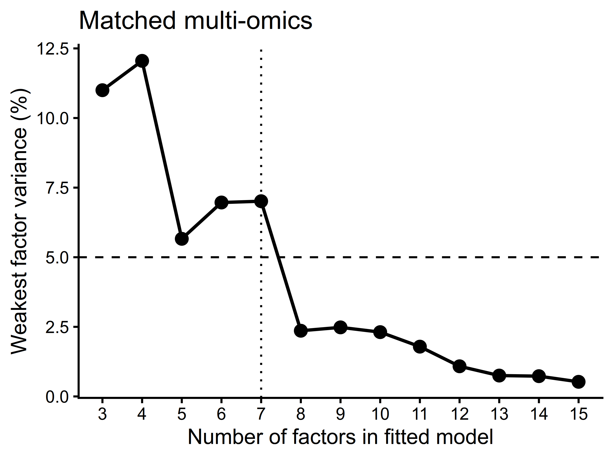
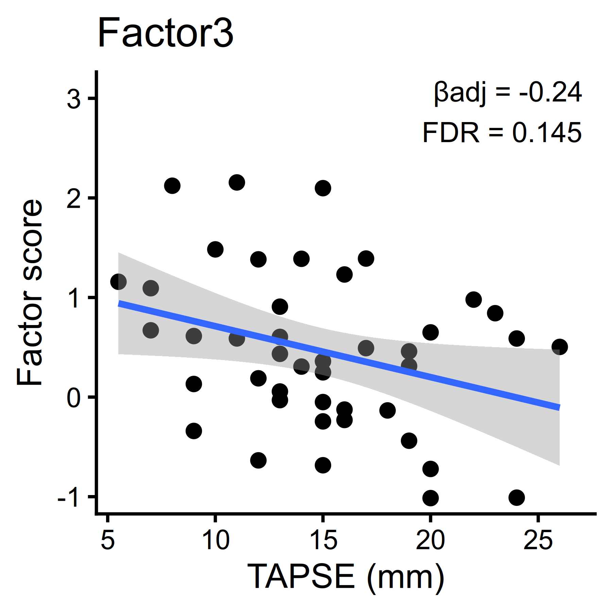
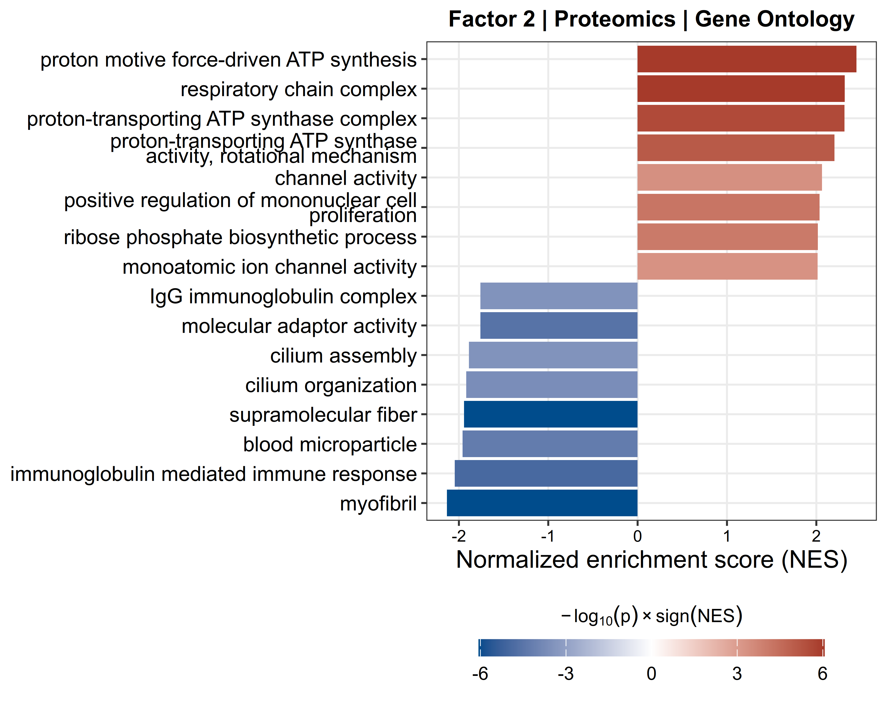
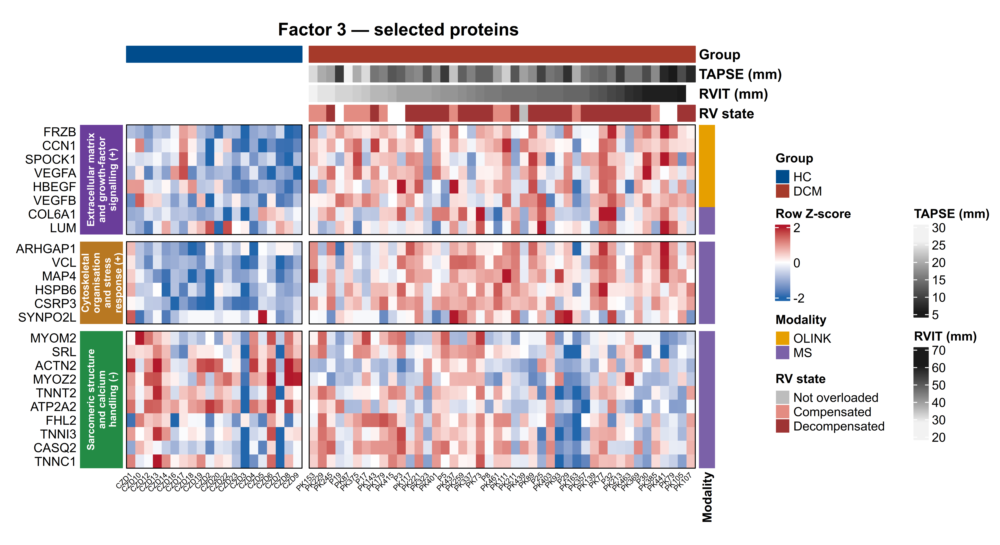
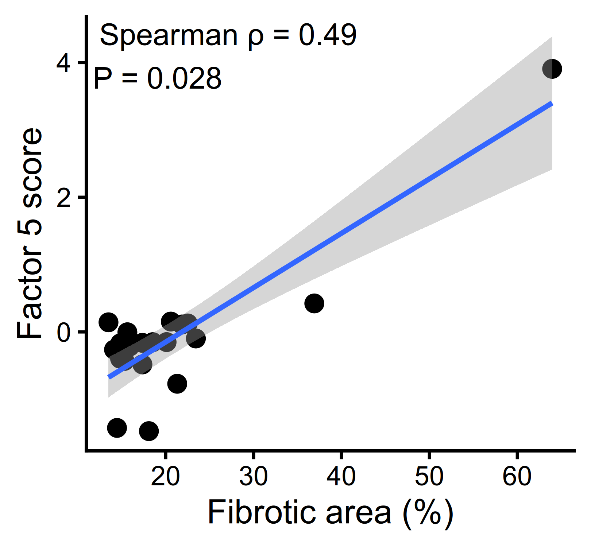
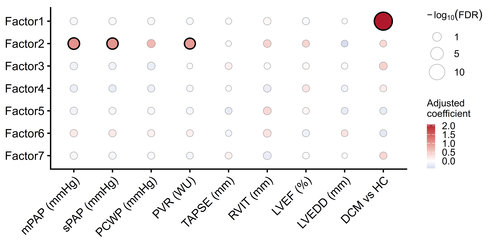

Integrative analysis of transcriptomics and proteomics
GinoBonazza (ginoandrea.bonazza@usz.ch)
18 November, 2026
Last updated: 2026-11-18
Checks: 7 0
Knit directory: project/
This reproducible R Markdown analysis was created with workflowr (version 1.7.2). The Checks tab describes the reproducibility checks that were applied when the results were created. The Past versions tab lists the development history.
Great! Since the R Markdown file has been committed to the Git repository, you know the exact version of the code that produced these results.
Great job! The global environment was empty. Objects defined in the global environment can affect the analysis in your R Markdown file in unknown ways. For reproduciblity it’s best to always run the code in an empty environment.
The command set.seed(20240606) was run prior to running
the code in the R Markdown file. Setting a seed ensures that any results
that rely on randomness, e.g. subsampling or permutations, are
reproducible.
Great job! Recording the operating system, R version, and package versions is critical for reproducibility.
Nice! There were no cached chunks for this analysis, so you can be confident that you successfully produced the results during this run.
Great job! Using relative paths to the files within your workflowr project makes it easier to run your code on other machines.
Great! You are using Git for version control. Tracking code development and connecting the code version to the results is critical for reproducibility.
The results in this page were generated with repository version d4b8eb1. See the Past versions tab to see a history of the changes made to the R Markdown and HTML files.
Note that you need to be careful to ensure that all relevant files for
the analysis have been committed to Git prior to generating the results
(you can use wflow_publish or
wflow_git_commit). workflowr only checks the R Markdown
file, but you know if there are other scripts or data files that it
depends on. Below is the status of the Git repository when the results
were generated:
Ignored files:
Ignored: analysis/figure/
Ignored: logs/
Untracked files:
Untracked: data/Baza_dla_Gino_AP.xlsx
Untracked: data/Baza_dla_Gino_AP_2.xlsx
Untracked: data/Baza_dla_Gino_AP_short.xlsx
Untracked: data/Cellbender_output
Untracked: data/Cellranger_output
Untracked: data/DCM_Clinical_data_22.xlsx
Untracked: data/DCM_Clinical_data_26.xlsx
Untracked: data/DCM_Clinical_data_30.xlsx
Untracked: data/DCM_Clinical_data_30_261012.xlsx
Untracked: data/DCM_Clinical_data_83.xlsx
Untracked: data/HMEC_RNAseq
Untracked: data/Heart_datasets
Untracked: data/Heart_specific_proteome.xlsx
Untracked: data/Homo_sapiens.GRCh38.93.gtf
Untracked: data/Human_plasma_proteome.xlsx
Untracked: data/Mass_spec
Untracked: data/Massons_quantification.xlsx
Untracked: data/OLINK
Untracked: data/OLINK_LVAD
Untracked: data/Published_datasets
Untracked: data/Raw
Untracked: data/SSc-PAH
Untracked: data/gencode.v46.chr_patch_hapl_scaff.annotation.gtf
Untracked: data/gencode.v46.chr_patch_hapl_scaff.basic.annotation.gtf
Untracked: data/processed/CM/activities.qs2
Untracked: data/processed/CM/annotated.qs2
Untracked: data/processed/CM/baseline.qs2
Untracked: data/processed/EC/activities.qs2
Untracked: data/processed/EC/annotated.qs2
Untracked: data/processed/EC/baseline.qs2
Untracked: data/processed/FB/activities.qs2
Untracked: data/processed/FB/annotated.qs2
Untracked: data/processed/FB/baseline.qs2
Untracked: data/processed/LC/PC10.qs2
Untracked: data/processed/LC/PC20.qs2
Untracked: data/processed/LC/PC30.qs2
Untracked: data/processed/LC/activities.qs2
Untracked: data/processed/LC/annotated.qs2
Untracked: data/processed/LC/baseline.qs2
Untracked: data/processed/MC/activities.qs2
Untracked: data/processed/MC/annotated.qs2
Untracked: data/processed/MC/baseline.qs2
Untracked: data/processed/MP/PC10.qs2
Untracked: data/processed/MP/PC20.qs2
Untracked: data/processed/MP/PC30.qs2
Untracked: data/processed/MP/activities.qs2
Untracked: data/processed/MP/annotated.qs2
Untracked: data/processed/MP/baseline.qs2
Untracked: data/processed/MultinicheNet.qs2
Untracked: data/processed/QC/annotated.qs2
Untracked: data/processed/QC/annotated_RNA.qs2
Untracked: data/processed/QC/doublet_metadata.csv
Untracked: data/processed/QC/final_integrated.qs2
Untracked: data/processed/QC/initial_integrated.qs2
Untracked: data/processed/QC/not_integrated.qs2
Untracked: data/processed/QC/preQC.qs2
Untracked: data/processed/RNA_quality_control.qs2
Untracked: data/processed/RV_cell_states_RNA.qs2
Untracked: data/processed/SoupX/A_SoupX_input_CZD13.qs2
Untracked: data/processed/SoupX/A_SoupX_input_CZD15.qs2
Untracked: data/processed/SoupX/A_SoupX_input_CZD16.qs2
Untracked: data/processed/SoupX/A_SoupX_input_CZD4.qs2
Untracked: data/processed/SoupX/A_SoupX_input_CZD5.qs2
Untracked: data/processed/SoupX/A_SoupX_input_CZD6.qs2
Untracked: data/processed/SoupX/A_SoupX_input_CZD7.qs2
Untracked: data/processed/SoupX/A_SoupX_input_CZD9.qs2
Untracked: data/processed/SoupX/A_SoupX_input_P3.qs2
Untracked: data/processed/SoupX/A_SoupX_input_P5.qs2
Untracked: data/processed/SoupX/A_SoupX_input_P8.qs2
Untracked: data/processed/SoupX/A_SoupX_input_PK153.qs2
Untracked: data/processed/SoupX/A_SoupX_input_PK213.qs2
Untracked: data/processed/SoupX/A_SoupX_input_PK229.qs2
Untracked: data/processed/SoupX/A_SoupX_input_PK323.qs2
Untracked: data/processed/SoupX/A_SoupX_input_PK337.qs2
Untracked: data/processed/SoupX/A_SoupX_input_PK345.qs2
Untracked: data/processed/SoupX/A_SoupX_input_PK357.qs2
Untracked: data/processed/SoupX/A_SoupX_input_PK369.qs2
Untracked: data/processed/SoupX/A_SoupX_input_PK375.qs2
Untracked: data/processed/SoupX/A_SoupX_input_PK385.qs2
Untracked: data/processed/SoupX/A_SoupX_input_PK401.qs2
Untracked: data/processed/SoupX/A_SoupX_input_PK403.qs2
Untracked: data/processed/SoupX/A_SoupX_input_PK415.qs2
Untracked: data/processed/SoupX/A_SoupX_input_PK437.qs2
Untracked: data/processed/SoupX/A_SoupX_input_PK439.qs2
Untracked: data/processed/SoupX/A_SoupX_input_PK441.qs2
Untracked: data/processed/SoupX/A_SoupX_input_PK461.qs2
Untracked: data/processed/SoupX/A_SoupX_input_PK463.qs2
Untracked: data/processed/SoupX/A_fresh_ambient_profile_CZD13.qs2
Untracked: data/processed/SoupX/A_fresh_ambient_profile_CZD15.qs2
Untracked: data/processed/SoupX/A_fresh_ambient_profile_CZD16.qs2
Untracked: data/processed/SoupX/A_fresh_ambient_profile_CZD4.qs2
Untracked: data/processed/SoupX/A_fresh_ambient_profile_CZD5.qs2
Untracked: data/processed/SoupX/A_fresh_ambient_profile_CZD6.qs2
Untracked: data/processed/SoupX/A_fresh_ambient_profile_CZD7.qs2
Untracked: data/processed/SoupX/A_fresh_ambient_profile_CZD9.qs2
Untracked: data/processed/SoupX/A_fresh_ambient_profile_P3.qs2
Untracked: data/processed/SoupX/A_fresh_ambient_profile_P5.qs2
Untracked: data/processed/SoupX/A_fresh_ambient_profile_P8.qs2
Untracked: data/processed/SoupX/A_fresh_ambient_profile_PK153.qs2
Untracked: data/processed/SoupX/A_fresh_ambient_profile_PK213.qs2
Untracked: data/processed/SoupX/A_fresh_ambient_profile_PK229.qs2
Untracked: data/processed/SoupX/A_fresh_ambient_profile_PK323.qs2
Untracked: data/processed/SoupX/A_fresh_ambient_profile_PK337.qs2
Untracked: data/processed/SoupX/A_fresh_ambient_profile_PK345.qs2
Untracked: data/processed/SoupX/A_fresh_ambient_profile_PK357.qs2
Untracked: data/processed/SoupX/A_fresh_ambient_profile_PK369.qs2
Untracked: data/processed/SoupX/A_fresh_ambient_profile_PK375.qs2
Untracked: data/processed/SoupX/A_fresh_ambient_profile_PK385.qs2
Untracked: data/processed/SoupX/A_fresh_ambient_profile_PK401.qs2
Untracked: data/processed/SoupX/A_fresh_ambient_profile_PK403.qs2
Untracked: data/processed/SoupX/A_fresh_ambient_profile_PK415.qs2
Untracked: data/processed/SoupX/A_fresh_ambient_profile_PK437.qs2
Untracked: data/processed/SoupX/A_fresh_ambient_profile_PK439.qs2
Untracked: data/processed/SoupX/A_fresh_ambient_profile_PK441.qs2
Untracked: data/processed/SoupX/A_fresh_ambient_profile_PK461.qs2
Untracked: data/processed/SoupX/A_fresh_ambient_profile_PK463.qs2
Untracked: data/processed/mPAP/CM_GSEA_Reactome_mPAP.rds
Untracked: data/processed/mPAP/CM_ORA_REACTOME_mPAP_down.rds
Untracked: data/processed/mPAP/CM_ORA_REACTOME_mPAP_up.rds
Untracked: data/processed/mPAP/CM_activities.qs2
Untracked: data/processed/resources/A_activity_API_compatibility.json
Untracked: data/processed/resources/A_activity_network_manifest.json
Untracked: data/processed/resources/A_final_resource_manifest.json
Untracked: data/processed/resources/A_ligand_target_matrix_nsga2r_final.rds
Untracked: data/processed/resources/A_resources_sessionInfo.txt
Untracked: data/processed/resources/A_submitted_programme_provenance.json
Untracked: data/refdata-gex-GRCh38-2020-A
Untracked: omnipathr-log/
Untracked: output/Ambient_RNA_correction/
Untracked: output/Cardiomyocytes_cell_states/
Untracked: output/Cell_communication/
Untracked: output/Cell_state_annotation/
Untracked: output/Clinical_transcriptomic_associations/
Untracked: output/DCM_control_transcriptomics/
Untracked: output/Datasets/
Untracked: output/Endothelial_cells_cell_states/
Untracked: output/Fibroblasts_cell_states/
Untracked: output/Fibrosis_associations/
Untracked: output/Integrative_analysis/
Untracked: output/Lymphocytes_cell_states/
Untracked: output/Macrophages_cell_states/
Untracked: output/Mural_cells_cell_states/
Untracked: output/Protein_differential_abundance/
Untracked: output/Protein_quality_control/
Untracked: output/Pulmonary_pressure_associations/
Untracked: output/QC_integration/
Untracked: output/Supplementary_datasets/
Untracked: output/Transcriptional_signatures/
Untracked: output/Transcriptomic_variation/
Unstaged changes:
Deleted: output/README.md
Note that any generated files, e.g. HTML, png, CSS, etc., are not included in this status report because it is ok for generated content to have uncommitted changes.
These are the previous versions of the repository in which changes were
made to the R Markdown (analysis/Integrative_analysis.Rmd)
and HTML (docs/Integrative_analysis.html) files. If you’ve
configured a remote Git repository (see ?wflow_git_remote),
click on the hyperlinks in the table below to view the files as they
were in that past version.
| File | Version | Author | Date | Message |
|---|---|---|---|---|
| Rmd | d4b8eb1 | GinoBonazza | 2026-11-18 | Document assay-specific age covariates in donor metadata |
| html | d4b8eb1 | GinoBonazza | 2026-11-18 | Document assay-specific age covariates in donor metadata |
| Rmd | 0ab82a3 | GinoBonazza | 2026-11-18 | Include RNA processing and sequencing batches in EV1 |
| html | 0ab82a3 | GinoBonazza | 2026-11-18 | Include RNA processing and sequencing batches in EV1 |
| Rmd | cda4263 | GinoBonazza | 2026-11-18 | Align signature membership exports with the tested cell types |
| html | cda4263 | GinoBonazza | 2026-11-18 | Align signature membership exports with the tested cell types |
| Rmd | 78001e3 | GinoBonazza | 2026-11-18 | Refine compact programme panel labels |
| html | 78001e3 | GinoBonazza | 2026-11-18 | Refine compact programme panel labels |
| Rmd | 9a47f63 | GinoBonazza | 2026-11-18 | Add HC-inclusive analysis scripts and frozen reproducibility inputs |
| html | 9a47f63 | GinoBonazza | 2026-11-18 | Add HC-inclusive analysis scripts and frozen reproducibility inputs |
| Rmd | d136073 | GinoBonazza | 2026-10-19 | MXRA5 coexpression analysis |
| html | d136073 | GinoBonazza | 2026-10-19 | MXRA5 coexpression analysis |
Setup
knitr::opts_chunk$set(warning = FALSE, message = FALSE, error = FALSE, cache = FALSE, echo = TRUE, dpi = 600, fig.retina = 1,
fig.align = "center", dev = "png", dev.args = list(type = "cairo", family = "Arial"))
library(here)here() starts at /scratch/gbonaz/A_publication_20261118/projectcurrent_file <- "Integrative_analysis"
output_dir_data <- here::here("output", current_file)
output_dir_figs <- here::here("docs", "figure", paste0(current_file, ".Rmd"))
dir.create(output_dir_data, recursive = TRUE, showWarnings = FALSE)
dir.create(output_dir_figs, recursive = TRUE, showWarnings = FALSE)
dir.create(here::here("output", "Datasets"), recursive = TRUE, showWarnings = FALSE)
knitr::opts_chunk$set(fig.path = paste0(output_dir_figs, "/"))
set.seed(20240606)options(stringsAsFactors = FALSE)
library(dplyr)
library(tidyr)
library(tibble)
library(Matrix)
library(matrixStats)
library(Seurat)
library(edgeR)
library(DESeq2)
library(SummarizedExperiment)
library(limma)
library(MOFA2)
library(qs2)
log_step <- function(x) message(format(Sys.time(), "%FT%T"), " ", x)
O <- output_dir_data
count <- dplyr::count
filter <- dplyr::filter
select <- dplyr::select
desc <- dplyr::desc
slice <- dplyr::slice
base_output_dir <- O
preprocessing_output_dir <- file.path(O, "preprocessed_views")
proteomics_output_dir <- file.path(O, "proteomics_model")
matched_output_dir <- file.path(O, "matched_three_view_model")
for (x in c(preprocessing_output_dir, proteomics_output_dir, matched_output_dir)) dir.create(x, recursive = TRUE,
showWarnings = FALSE)
processed_proteomics_file <- file.path(preprocessing_output_dir, "processed_Olink_and_LCMS_views.rds")
processed_rna_file <- file.path(preprocessing_output_dir, "processed_RNA_pseudobulk_view.rds")
proteomics_input_file <- file.path(proteomics_output_dir, "MOFA_proteomics_input.rds")
matched_input_file <- file.path(matched_output_dir, "MOFA_matched_three_view_input.rds")
seurat_file <- here::here("data", "processed", "RV_cell_states_RNA.qs2")
proteomics_qc_file <- here::here("output", "Protein_quality_control", "Proteomics_QC.rds")
mPAP_overload_cutoff <- 20
coupling_cutoff <- 0.36
rna_min_nuclei_fraction <- 0.01
min_rna_library_size <- 50000
n_rna_features <- 2000
exclude_mitochondrial_and_ribosomal_genes <- TRUE
min_ms_observed_fraction <- 0.5
n_qs_threads <- 2
clinical_parameters <- c("mPAP_mmHg", "sPAP_mmHg", "PCW_mmHg", "PVR_WU", "TAPSE_mm", "RVIT_mm", "LVEF_percent",
"LVEDD_mm")
filtered_proteomics <- readRDS(proteomics_qc_file)Model inputs
retained_dcm_samples <- filtered_proteomics$clinical$Sample
clin_all <- filtered_proteomics$clinical %>% dplyr::filter(Group %in% c("DCM", "HC"), Sample %in% retained_dcm_samples) %>%
dplyr::mutate(Sample = as.character(Sample), Age_years = as.numeric(Age_years), LVEF_percent = as.numeric(LVEF_percent),
LVID_mm = as.numeric(LVID_mm), LVEDD_mm = as.numeric(LVEDD_mm), RVOT_mm = as.numeric(RVOT_mm), TAPSE_mm = as.numeric(TAPSE_mm),
RVIT_mm = as.numeric(RVIT_mm), RAA_cm2 = as.numeric(RAA_cm2), RVS_cm.s = as.numeric(RVS_cm.s), RVSP_mmHg = as.numeric(RVSP_mmHg),
sPAP_mmHg = as.numeric(sPAP_mmHg), mPAP_mmHg = as.numeric(mPAP_mmHg), PCW_mmHg = as.numeric(PCW_mmHg),
PVR_WU = as.numeric(PVR_WU), TPG_mmHg = as.numeric(TPG_mmHg), CO_l.min = as.numeric(CO_l.min), TAPSE_sPAP = TAPSE_mm/sPAP_mmHg) %>%
dplyr::distinct(Sample, .keep_all = TRUE) %>% dplyr::mutate(RV_group = dplyr::case_when(is.na(mPAP_mmHg) ~
NA_character_, mPAP_mmHg <= mPAP_overload_cutoff ~ "Not overloaded", mPAP_mmHg > mPAP_overload_cutoff & is.na(TAPSE_sPAP) ~
NA_character_, mPAP_mmHg > mPAP_overload_cutoff & TAPSE_sPAP > coupling_cutoff ~ "Compensated", mPAP_mmHg >
mPAP_overload_cutoff & TAPSE_sPAP <= coupling_cutoff ~ "Decompensated", TRUE ~ NA_character_), RV_group = factor(RV_group,
levels = c("Not overloaded", "Compensated", "Decompensated")), Sex = factor(Sex), Etiology = factor(Etiology))
clin_all %>% dplyr::count(RV_group, .drop = FALSE)# A tibble: 4 × 2
RV_group n
<fct> <int>
1 Not overloaded 1
2 Compensated 11
3 Decompensated 28
4 <NA> 27clin_all$RV_group[clin_all$Group != "DCM"] <- NA
write.csv(clin_all, file.path(O, "A_all_clinical_metadata.csv"), row.names = FALSE)
olink_expr <- filtered_proteomics$olink
olink_sample_meta <- filtered_proteomics$olink_metadata %>% dplyr::mutate(Sample = as.character(Sample), BCA_mg_ml = as.numeric(BCA_mg_ml),
Batch = factor(Batch)) %>% dplyr::distinct(Sample, .keep_all = TRUE)
olink_samples <- clin_all$Sample[clin_all$Sample %in% colnames(olink_expr)]
olink_expr <- olink_expr[, olink_samples, drop = FALSE]
olink_meta <- clin_all %>% dplyr::inner_join(olink_sample_meta %>% dplyr::select(Sample, Batch, BCA_mg_ml), by = "Sample") %>%
dplyr::filter(Sample %in% colnames(olink_expr), !is.na(BCA_mg_ml)) %>% dplyr::slice(match(colnames(olink_expr),
Sample)) %>% dplyr::distinct(Sample, .keep_all = TRUE)
olink_expr <- olink_expr[, olink_meta$Sample, drop = FALSE]
olink_observed <- matrixStats::rowSums2(is.finite(olink_expr))
olink_variance_original <- matrixStats::rowVars(olink_expr, na.rm = TRUE)
keep_olink_features <- olink_observed >= 2 & is.finite(olink_variance_original) & olink_variance_original > 0
olink_expr <- olink_expr[keep_olink_features, , drop = FALSE]
dim(olink_expr)[1] 1034 64bca_covariate <- matrix(as.numeric(scale(olink_meta$BCA_mg_ml)), ncol = 1, dimnames = list(olink_meta$Sample, "BCA_scaled"))
olink_mofa <- limma::removeBatchEffect(olink_expr, covariates = bca_covariate)
olink_variance_corrected <- matrixStats::rowVars(olink_mofa, na.rm = TRUE)
keep_corrected_olink_features <- is.finite(olink_variance_corrected) & olink_variance_corrected > 0
olink_mofa <- olink_mofa[keep_corrected_olink_features, , drop = FALSE]
olink_feature_table <- tibble::tibble(feature = rownames(olink_expr), variance_before_BCA_correction = matrixStats::rowVars(olink_expr,
na.rm = TRUE), variance_after_BCA_correction = olink_variance_corrected, selected_for_MOFA = rownames(olink_expr) %in%
rownames(olink_mofa))
bca_correlations_before <- apply(olink_expr, 1, stats::cor, y = olink_meta$BCA_mg_ml, use = "pairwise.complete.obs")
bca_correlations_after <- apply(olink_mofa, 1, stats::cor, y = olink_meta$BCA_mg_ml, use = "pairwise.complete.obs")
olink_bca_correction_diagnostic <- tibble::tibble(feature = names(bca_correlations_before), correlation_before = as.numeric(bca_correlations_before),
correlation_after = as.numeric(bca_correlations_after[names(bca_correlations_before)]))
write.csv(olink_feature_table, file.path(preprocessing_output_dir, "Olink_feature_selection_all_proteins.csv"),
row.names = FALSE)
write.csv(olink_bca_correction_diagnostic, file.path(preprocessing_output_dir, "Olink_BCA_correction_diagnostic.csv"),
row.names = FALSE)
dim(olink_mofa)[1] 1034 64ms_expr <- filtered_proteomics$ms
ms_samples <- clin_all$Sample[clin_all$Sample %in% colnames(ms_expr)]
ms_expr <- ms_expr[, ms_samples, drop = FALSE]
ms_observed_fraction <- matrixStats::rowMeans2(is.finite(ms_expr))
ms_variance <- matrixStats::rowVars(ms_expr, na.rm = TRUE)
keep_ms_features <- ms_observed_fraction >= min_ms_observed_fraction & is.finite(ms_variance) & ms_variance > 0
ms_mofa <- ms_expr[keep_ms_features, , drop = FALSE]
ms_feature_table <- tibble::tibble(feature = rownames(ms_expr), observed_fraction = ms_observed_fraction, variance = ms_variance,
selected_for_MOFA = keep_ms_features) %>% dplyr::arrange(dplyr::desc(variance))
write.csv(ms_feature_table, file.path(preprocessing_output_dir, "MS_feature_selection.csv"), row.names = FALSE)
dim(ms_mofa)[1] 644 67saveRDS(list(Olink = olink_mofa, LCMS = ms_mofa, Olink_original = olink_expr, Olink_metadata = olink_meta, Olink_BCA_diagnostic = olink_bca_correction_diagnostic,
QC_source_file = proteomics_qc_file), processed_proteomics_file)
proteomics_samples <- clin_all$Sample[clin_all$Sample %in% intersect(colnames(olink_mofa), colnames(ms_mofa))]
proteomics_data <- list(Olink = olink_mofa[, proteomics_samples, drop = FALSE], LCMS = ms_mofa[, proteomics_samples,
drop = FALSE])
lapply(proteomics_data, dim)$Olink
[1] 1034 64
$LCMS
[1] 644 64saveRDS(proteomics_data, proteomics_input_file)
stopifnot(all(c("HC", "DCM") %in% as.character(clin_all$Group[match(colnames(proteomics_data[[1]]), clin_all$Sample)])))
DCM_RV <- qs2::qs_read(seurat_file, nthreads = n_qs_threads)
DefaultAssay(DCM_RV) <- "RNA"
DCM_RV$pseudobulk <- "Pseudobulk"
dcm_cells <- colnames(DCM_RV)[DCM_RV$Sample %in% clin_all$Sample]
rna_counts <- SeuratObject::LayerData(DCM_RV, assay = "RNA", layer = "counts")[, dcm_cells, drop = FALSE]
n_rna_nuclei <- ncol(rna_counts)
minimum_nuclei <- ceiling(rna_min_nuclei_fraction * n_rna_nuclei)
rna_nuclei_detected <- Matrix::rowSums(rna_counts > 0)
rna_detection_table <- tibble::tibble(feature = rownames(rna_counts), n_nuclei_detected = as.numeric(rna_nuclei_detected),
fraction_nuclei_detected = as.numeric(rna_nuclei_detected)/n_rna_nuclei, passes_1_percent_filter = n_nuclei_detected >=
minimum_nuclei)
if (exclude_mitochondrial_and_ribosomal_genes) {
rna_detection_table <- rna_detection_table %>% dplyr::mutate(mitochondrial_or_ribosomal = grepl("^MT-|^RP[SL]",
feature), retained_before_VST = passes_1_percent_filter & !mitochondrial_or_ribosomal)
} else {
rna_detection_table <- rna_detection_table %>% dplyr::mutate(mitochondrial_or_ribosomal = FALSE, retained_before_VST = passes_1_percent_filter)
}
rna_genes_for_pseudobulk <- rna_detection_table %>% dplyr::filter(retained_before_VST) %>% dplyr::pull(feature)
write.csv(rna_detection_table, file.path(preprocessing_output_dir, "RNA_nucleus_detection_filter.csv"), row.names = FALSE)
c(nuclei = n_rna_nuclei, minimum_nuclei = minimum_nuclei, retained_genes = length(rna_genes_for_pseudobulk)) nuclei minimum_nuclei retained_genes
190794 1908 17342 rna_pb <- edgeR::Seurat2PB(DCM_RV, sample = "Sample", cluster = "pseudobulk")
colnames(rna_pb) <- rna_pb$samples$sample
rna_samples <- intersect(clin_all$Sample, colnames(rna_pb))
rna_pb <- rna_pb[, rna_samples, keep.lib.sizes = FALSE]
keep_rna_samples <- rna_pb$samples$lib.size > min_rna_library_size
rna_pb <- rna_pb[, keep_rna_samples, keep.lib.sizes = FALSE]
rna_genes_for_pseudobulk <- intersect(rna_genes_for_pseudobulk, rownames(rna_pb))
rna_pb <- rna_pb[rna_genes_for_pseudobulk, , keep.lib.sizes = FALSE]
rm(rna_counts)
gc() used (Mb) gc trigger (Mb) max used (Mb)
Ncells 12893101 688.6 22418087 1197.3 21517055 1149.2
Vcells 1649165146 12582.2 4701085244 35866.5 3815532063 29110.2dim(rna_pb)[1] 17342 29rna_count_matrix <- as.matrix(rna_pb$counts)
storage.mode(rna_count_matrix) <- "integer"
rna_coldata <- data.frame(Sample = colnames(rna_count_matrix), row.names = colnames(rna_count_matrix))
rna_dds <- DESeq2::DESeqDataSetFromMatrix(countData = rna_count_matrix, colData = rna_coldata, design = ~1)
rna_vst_object <- DESeq2::vst(rna_dds, blind = TRUE)
rna_vst_matrix <- SummarizedExperiment::assay(rna_vst_object)
rna_variance <- matrixStats::rowVars(rna_vst_matrix)
keep_finite_rna_variance <- is.finite(rna_variance) & rna_variance > 0
rna_vst_matrix <- rna_vst_matrix[keep_finite_rna_variance, , drop = FALSE]
rna_variance <- rna_variance[keep_finite_rna_variance]
rna_feature_order <- order(rna_variance, decreasing = TRUE)
rna_feature_order <- head(rna_feature_order, min(n_rna_features, length(rna_feature_order)))
rna_mofa <- rna_vst_matrix[rna_feature_order, , drop = FALSE]
rna_feature_table <- tibble::tibble(feature = rownames(rna_vst_matrix), VST_variance = as.numeric(rna_variance),
selected_for_MOFA = rownames(rna_vst_matrix) %in% rownames(rna_mofa)) %>% dplyr::arrange(dplyr::desc(VST_variance))
write.csv(rna_feature_table, file.path(preprocessing_output_dir, "RNA_VST_feature_selection.csv"), row.names = FALSE)
saveRDS(list(RNA_pseudobulk = rna_mofa, RNA_VST_all_filtered_genes = rna_vst_matrix, feature_table = rna_feature_table),
processed_rna_file)
dim(rna_mofa)[1] 2000 29matched_samples <- Reduce(intersect, list(colnames(rna_mofa), colnames(olink_mofa), colnames(ms_mofa)))
matched_samples <- clin_all$Sample[clin_all$Sample %in% matched_samples]
matched_data <- list(RNA_pseudobulk = rna_mofa[, matched_samples, drop = FALSE], Olink = olink_mofa[, matched_samples,
drop = FALSE], LCMS = ms_mofa[, matched_samples, drop = FALSE])
length(matched_samples)[1] 27lapply(matched_data, dim)$RNA_pseudobulk
[1] 2000 27
$Olink
[1] 1034 27
$LCMS
[1] 644 27saveRDS(matched_data, matched_input_file)
write.csv(as.data.frame(table(Sample = DCM_RV$Sample)), file.path(O, "A_RNA_nuclei_per_donor.csv"), row.names = FALSE)
saveRDS(list(clin_all = clin_all, olink_sample_meta = olink_sample_meta, clinical_parameters = clinical_parameters,
final_nuclei = ncol(DCM_RV)), file.path(O, "A_metadata.rds"))
coverage <- bind_rows(lapply(c("proteomics", "matched"), function(model) {
dat <- if (model == "proteomics")
proteomics_data
else matched_data
tibble(Model = model, Sample = colnames(dat[[1]]))
})) %>% left_join(clin_all %>% select(Sample, Group, RV_group, Age_years), by = "Sample")
write.csv(coverage, file.path(O, "A_model_donors.csv"), row.names = FALSE)
print(coverage %>% count(Model, Group))# A tibble: 4 × 3
Model Group n
<chr> <fct> <int>
1 matched DCM 20
2 matched HC 7
3 proteomics DCM 44
4 proteomics HC 20print(coverage %>% count(Model, RV_group))# A tibble: 8 × 3
Model RV_group n
<chr> <fct> <int>
1 matched Not overloaded 1
2 matched Compensated 6
3 matched Decompensated 10
4 matched <NA> 10
5 proteomics Not overloaded 1
6 proteomics Compensated 11
7 proteomics Decompensated 27
8 proteomics <NA> 25stopifnot(all(c("HC", "DCM") %in% as.character(coverage$Group[coverage$Model == "matched"])))
writeLines(capture.output(sessionInfo()), file.path(O, "A_preparation_sessionInfo.txt"))Factor models
fit_model <- function(data, K, seed, maxiter, path) {
if (file.exists(path))
return(MOFA2::load_model(path, sort_factors = TRUE, remove_inactive_factors = FALSE))
ob <- MOFA2::create_mofa(data)
dop <- MOFA2::get_default_data_options(ob)
dop$scale_views <- TRUE
mop <- MOFA2::get_default_model_options(ob)
mop$num_factors <- K
mop$likelihoods[] <- "gaussian"
top <- MOFA2::get_default_training_options(ob)
top$maxiter <- maxiter
top$convergence_mode <- "medium"
top$freqELBO <- 5
top$drop_factor_threshold <- -1
top$seed <- seed
top$verbose <- FALSE
ob <- MOFA2::prepare_mofa(ob, data_options = dop, model_options = mop, training_options = top)
MOFA2::run_mofa(ob, outfile = path, use_basilisk = FALSE)
MOFA2::load_model(path, sort_factors = TRUE, remove_inactive_factors = FALSE)
}
get_out <- function(nm) file.path(O, if (nm == "proteomics") "proteomics_model" else "matched_three_view_model")
get_data <- function(nm) readRDS(file.path(get_out(nm), if (nm == "proteomics") "MOFA_proteomics_input.rds" else "MOFA_matched_three_view_input.rds"))grid <- expand.grid(seed = c(20260715, 20260716, 20260717), n_factors = 3:15, Model = c("proteomics", "matched"),
stringsAsFactors = FALSE)
for (i in seq_len(nrow(grid))) {
g <- grid[i, ]
out <- get_out(g$Model)
data <- get_data(g$Model)
path <- file.path(out, sprintf("A_tuning_K%02d_seed%d.hdf5", g$n_factors, g$seed))
m <- fit_model(data, g$n_factors, g$seed, 5000, path)
rr <- MOFA2::get_variance_explained(m)$r2_per_factor[[1]]
stopifnot(nrow(rr) == g$n_factors, all(is.finite(rr)))
tt <- data.frame(n_factors = g$n_factors, seed = g$seed, final_ELBO = MOFA2::get_elbo(m), weakest_factor_max_view_R2 = min(apply(rr,
1, max)), n_factors_any_view_R2_at_least_5 = sum(apply(rr, 1, max) >= 5), model_file = path)
write.csv(tt, file.path(out, sprintf("A_tuning_summary_K%02d_seed%d.csv", g$n_factors, g$seed)), row.names = FALSE)
}for (nm in c("proteomics", "matched")) {
out <- get_out(nm)
data <- get_data(nm)
gg <- grid[grid$Model == nm, ]
files <- file.path(out, sprintf("A_tuning_summary_K%02d_seed%d.csv", gg$n_factors, gg$seed))
stopifnot(length(files) == 39, all(file.exists(files)))
tt <- bind_rows(lapply(files, read.csv))
stopifnot(nrow(tt) == 39, !anyDuplicated(tt[, c("n_factors", "seed")]), all(is.finite(tt$final_ELBO)))
write.csv(tt, file.path(out, "A_factor_tuning_all_runs.csv"), row.names = FALSE)
best <- tt %>% group_by(n_factors) %>% slice_max(final_ELBO, n = 1, with_ties = FALSE) %>% ungroup() %>% arrange(n_factors)
write.csv(best, file.path(out, "A_factor_tuning_best_seed_per_K.csv"), row.names = FALSE)
low <- best$weakest_factor_max_view_R2 < 5
starts <- which(vapply(seq_len(nrow(best) - 2), function(i) all(low[i:(i + 2)]), logical(1)))
plateau <- length(starts) > 0
upper <- if (plateau)
best$n_factors[starts[1]] - 1
else max(best$n_factors)
eligible <- best %>% filter(n_factors <= upper, weakest_factor_max_view_R2 >= 5) %>% arrange(desc(n_factors))
stopifnot(nrow(eligible) > 0)
attempts <- list()
for (j in seq_len(nrow(eligible))) {
K <- eligible$n_factors[j]
seed <- eligible$seed[j]
path <- file.path(out, paste0("A_final_refit_K", K, ".hdf5"))
m <- fit_model(data, K, seed, 10000, path)
rr <- MOFA2::get_variance_explained(m)$r2_per_factor[[1]]
weak <- min(apply(rr, 1, max))
attempts[[j]] <- data.frame(K = K, seed = seed, weakest_factor_max_view_R2 = weak, passes = weak >= 5)
write.csv(bind_rows(attempts), file.path(out, "A_final_refit_threshold_checks.csv"), row.names = FALSE)
if (weak >= 5)
break
}
stopifnot(weak >= 5)
file.copy(path, file.path(out, "A_final_model.hdf5"), overwrite = TRUE)
saveRDS(m, file.path(out, "A_final_model.rds"))
settings <- data.frame(selected_n_factors = K, selected_seed = seed, factor_plateau_reached = plateau, weakest_factor_R2_cutoff = 5,
consecutive_low_models_required = 3, tuning_min_K = 3, tuning_max_K = 15, tuning_maxiter = 5000, final_maxiter = 10000,
convergence_mode = "medium", variance_metric = "minimum across factors of maximum per-view R2", final_weakest_factor_max_view_R2 = weak)
write.csv(settings, file.path(out, "A_selected_model_settings.csv"), row.names = FALSE)
}Clinical associations
library(broom)
meta <- readRDS(file.path(O, "A_metadata.rds"))
clin <- meta$clin_all
fib <- readxl::read_excel(here::here("data/Massons_quantification.xlsx"))
if (!"Fibrosis_percent" %in% names(fib)) names(fib)[3] <- "Fibrosis_percent"
fib <- fib %>% transmute(Sample = as.character(Sample), Fibrosis_percent = as.numeric(Fibrosis_percent)) %>% distinct(Sample,
.keep_all = TRUE)
clin <- left_join(clin, fib, by = "Sample")
associations <- list()
all_results <- list()
for (which_model in c("proteomics", "matched")) {
out <- file.path(O, if (which_model == "proteomics")
"proteomics_model"
else "matched_three_view_model")
model <- readRDS(file.path(out, "A_final_model.rds"))
z <- MOFA2::get_factors(model, factors = "all", as.data.frame = FALSE)[[1]]
scores <- as.data.frame(z) %>% rownames_to_column("Sample") %>% pivot_longer(-Sample, names_to = "Factor",
values_to = "Factor_value") %>% left_join(clin, by = "Sample")
r2 <- MOFA2::get_variance_explained(model)$r2_per_factor[[1]]
r2tab <- as.data.frame(r2) %>% rownames_to_column("Factor") %>% pivot_longer(-Factor, names_to = "View", values_to = "R2")
w <- MOFA2::get_weights(model, views = "all", factors = "all", as.data.frame = FALSE)
weights <- bind_rows(lapply(names(w), function(v) as.data.frame(w[[v]]) %>% rownames_to_column("Feature") %>%
pivot_longer(-Feature, names_to = "Factor", values_to = "Weight") %>% mutate(View = v)))
fits <- list()
index <- 0L
for (fac in colnames(z)) {
for (test in c(meta$clinical_parameters, "DCM_vs_HC", "Decomp_vs_Comp", if (which_model == "matched") "Fibrosis_percent")) {
dd <- filter(scores, Factor == fac)
family <- if (test %in% meta$clinical_parameters)
"Continuous clinical"
else if (test == "DCM_vs_HC")
"DCM versus HC"
else if (test == "Decomp_vs_Comp")
"Decompensated versus compensated"
else "Fibrosis"
if (test %in% c(meta$clinical_parameters, "Fibrosis_percent")) {
dd <- dd %>% filter(Group == "DCM")
dd$x <- dd[[test]]
term <- "x"
direction <- "Per SD increase"
}
else if (test == "DCM_vs_HC") {
dd <- dd %>% filter(Group %in% c("DCM", "HC"))
dd$x <- factor(dd$Group, levels = c("HC", "DCM"))
term <- "xDCM"
direction <- "DCM - HC"
}
else {
dd <- dd %>% filter(Group == "DCM", RV_group %in% c("Compensated", "Decompensated"))
dd$x <- factor(dd$RV_group, levels = c("Compensated", "Decompensated"))
term <- "xDecompensated"
direction <- "Decompensated - Compensated"
}
dd <- dd[complete.cases(dd[, c("Factor_value", "x", "Age_years", "Sex")]), ]
dd$Sex <- factor(dd$Sex, levels = c("M", "F"))
use_sex <- which_model == "proteomics" && length(unique(dd$Sex)) > 1
form <- if (use_sex)
Factor_value ~ x + age_scaled + Sex
else Factor_value ~ x + age_scaled
row <- tibble(Model = which_model, Factor = fac, Family = family, Test = test, Direction = direction,
n = nrow(dd), n_female = sum(dd$Sex == "F"), n_male = sum(dd$Sex == "M"), Adjustment = if (use_sex)
"Age + sex"
else "Age (single-sex test cohort)", n_HC = sum(dd$Group == "HC"), n_DCM = sum(dd$Group == "DCM"),
n_compensated = sum(dd$RV_group == "Compensated", na.rm = TRUE), n_decompensated = sum(dd$RV_group ==
"Decompensated", na.rm = TRUE), beta = NA_real_, SE = NA_real_, CI_low = NA_real_, CI_high = NA_real_,
t = NA_real_, p_value = NA_real_, R2 = NA_real_, status = "not_estimable")
reason <- ""
if (nrow(dd) < 5 || length(unique(dd$x)) < 2 || length(unique(dd$Age_years)) < 2) {
reason <- "Insufficient complete cases or predictor/age variation"
}
else {
if (is.numeric(dd$x))
dd$x <- as.numeric(scale(dd$x))
dd$age_scaled <- as.numeric(scale(dd$Age_years))
mm <- model.matrix(form, dd)
if (qr(mm)$rank < ncol(mm) || nrow(dd) <= ncol(mm)) {
reason <- "Rank-deficient design or no residual degrees of freedom"
}
else {
fit <- lm(form, data = dd)
co <- broom::tidy(fit, conf.int = TRUE) %>% filter(.data$term == !!term)
stopifnot(nrow(co) == 1)
row$beta <- co$estimate
row$SE <- co$std.error
row$CI_low <- co$conf.low
row$CI_high <- co$conf.high
row$t <- co$statistic
row$p_value <- co$p.value
row$R2 <- summary(fit)$r.squared
row$status <- "estimated"
index <- index + 1L
fits[[paste(fac, test, sep = "__")]] <- list(data = dd, fit = fit, coefficient = term)
}
}
row$reason <- reason
associations[[length(associations) + 1L]] <- row
}
}
a <- bind_rows(associations) %>% filter(Model == which_model) %>% group_by(Model, Family) %>% mutate(FDR_family_wide = p.adjust(p_value,
"BH")) %>% ungroup() %>% group_by(Model, Test) %>% mutate(FDR_within_parameter = p.adjust(p_value, "BH"),
FDR = FDR_within_parameter) %>% ungroup()
write.csv(a, file.path(out, "A_factor_associations.csv"), row.names = FALSE)
write.csv(scores, file.path(out, "A_factor_scores_and_metadata.csv"), row.names = FALSE)
write.csv(weights, file.path(out, "A_all_factor_weights.csv"), row.names = FALSE)
write.csv(r2tab, file.path(out, "A_variance_explained.csv"), row.names = FALSE)
all_results[[which_model]] <- list(model = model, scores = scores, weights = weights, r2 = r2tab, associations = a,
fits = fits, tuning = read.csv(file.path(out, "A_factor_tuning_best_seed_per_K.csv")), settings = read.csv(file.path(out,
"A_selected_model_settings.csv")))
}
all_associations <- bind_rows(lapply(all_results, `[[`, "associations"))
write.csv(all_associations, file.path(O, "A_all_factor_associations.csv"), row.names = FALSE)
saveRDS(all_results, file.path(O, "A_report_results.rds"))
print(all_associations %>% filter(FDR < 0.1) %>% arrange(Model, Family, FDR))# A tibble: 11 × 25
Model Factor Family Test Direction n n_female n_male Adjustment n_HC
<chr> <chr> <chr> <chr> <chr> <int> <int> <int> <chr> <int>
1 matched Facto… Conti… mPAP… Per SD i… 17 0 17 Age (sing… 0
2 matched Facto… Conti… sPAP… Per SD i… 17 0 17 Age (sing… 0
3 matched Facto… Conti… PVR_… Per SD i… 17 0 17 Age (sing… 0
4 matched Facto… DCM v… DCM_… DCM - HC 27 0 27 Age (sing… 7
5 matched Facto… Fibro… Fibr… Per SD i… 20 0 20 Age (sing… 0
6 matched Facto… Fibro… Fibr… Per SD i… 20 0 20 Age (sing… 0
7 proteom… Facto… Conti… RVIT… Per SD i… 42 1 41 Age + sex 0
8 proteom… Facto… Conti… TAPS… Per SD i… 43 1 42 Age + sex 0
9 proteom… Facto… DCM v… DCM_… DCM - HC 63 7 56 Age + sex 20
10 proteom… Facto… DCM v… DCM_… DCM - HC 63 7 56 Age + sex 20
11 proteom… Facto… DCM v… DCM_… DCM - HC 63 7 56 Age + sex 20
# ℹ 15 more variables: n_DCM <int>, n_compensated <int>, n_decompensated <int>,
# beta <dbl>, SE <dbl>, CI_low <dbl>, CI_high <dbl>, t <dbl>, p_value <dbl>,
# R2 <dbl>, status <chr>, reason <chr>, FDR_family_wide <dbl>,
# FDR_within_parameter <dbl>, FDR <dbl>Enrichment functions
mofa_view_colors <- c(RNA = "#33A02C", OLINK = "#E38C82", MS = "#2166AC")
standardise_mofa_view_name <- function(view) {
dplyr::case_when(view == "RNA_pseudobulk" ~ "RNA", view == "Olink" ~ "OLINK", view == "LCMS" ~ "MS", TRUE ~
as.character(view))
}
clean_mofa_feature_name <- function(feature) {
stringr::str_remove(as.character(feature), "_(RNA_pseudobulk|RNA|Olink|OLINK|LCMS|MS)$")
}
format_p_value <- function(p_value, prefix = "P") {
dplyr::case_when(is.na(p_value) ~ paste0(prefix, " = NA"), p_value < 0.001 ~ paste0(prefix, " < 0.001"), TRUE ~
sprintf("%s = %.3f", prefix, p_value))
}
prepare_top_factor_loadings <- function(weight_table, factor_name = "Factor1", n_each_direction = 20) {
factor_weights <- weight_table %>% dplyr::filter(Factor == factor_name, is.finite(Weight)) %>% dplyr::mutate(Modality = standardise_mofa_view_name(View),
Feature_clean = clean_mofa_feature_name(Feature), Feature_label = paste(Modality, Feature_clean, sep = "_"))
positive_weights <- factor_weights %>% dplyr::filter(Weight > 0) %>% dplyr::slice_max(order_by = Weight, n = n_each_direction,
with_ties = FALSE)
negative_weights <- factor_weights %>% dplyr::filter(Weight < 0) %>% dplyr::slice_min(order_by = Weight, n = n_each_direction,
with_ties = FALSE)
dplyr::bind_rows(negative_weights, positive_weights) %>% dplyr::arrange(Weight) %>% dplyr::mutate(Feature_label = factor(Feature_label,
levels = unique(Feature_label)))
}
plot_top_factor_loadings <- function(loading_data, title_text) {
ggplot(loading_data, aes(x = Weight, y = Feature_label)) + geom_vline(xintercept = 0, linewidth = 0.35, color = "grey40") +
geom_segment(aes(x = 0, xend = Weight, yend = Feature_label), linewidth = 0.65, color = "grey65") + geom_point(aes(fill = Modality),
shape = 21, size = 3, color = "black", stroke = 0.3) + scale_fill_manual(values = mofa_view_colors, drop = FALSE) +
labs(title = title_text, x = "MOFA feature weight", y = NULL, fill = "Modality") + theme_classic() + theme(plot.title = element_text(hjust = 0.5,
face = "bold"), legend.position = "bottom")
}
scale_mofa_weights_within_view <- function(weight_table, factor_table) {
weight_table %>% dplyr::filter(Factor %in% factor_table$Factor, is.finite(Weight)) %>% dplyr::mutate(Feature_original = as.character(Feature),
Feature = clean_mofa_feature_name(Feature)) %>% dplyr::inner_join(factor_table, by = "Factor") %>% dplyr::group_by(Factor,
View) %>% dplyr::mutate(Oriented_weight = Weight * orientation, maximum_absolute_weight = max(abs(Oriented_weight),
na.rm = TRUE), Scaled_weight = dplyr::if_else(maximum_absolute_weight > 0, Oriented_weight/maximum_absolute_weight,
0), Absolute_scaled_weight = abs(Scaled_weight)) %>% dplyr::ungroup()
}
prepare_mofa_ranked_gene_list <- function(weight_table, factor_name, orientation) {
ranked_symbols <- scale_mofa_weights_within_view(weight_table = weight_table, factor_table = tibble::tibble(Factor = factor_name,
orientation = orientation, interpretation = factor_name)) %>% dplyr::group_by(Factor, Feature) %>% dplyr::summarise(Ranked_weight = mean(Scaled_weight,
na.rm = TRUE), .groups = "drop") %>% dplyr::filter(is.finite(Ranked_weight), Ranked_weight != 0)
symbol_to_entrez <- bitr(ranked_symbols$Feature, fromType = "SYMBOL", toType = "ENTREZID", OrgDb = org.Hs.eg.db) %>%
dplyr::distinct(SYMBOL, ENTREZID) %>% dplyr::mutate(ENTREZID = as.character(ENTREZID))
ranked_entrez <- ranked_symbols %>% dplyr::inner_join(symbol_to_entrez, by = c(Feature = "SYMBOL")) %>% dplyr::group_by(ENTREZID) %>%
dplyr::slice_max(order_by = abs(Ranked_weight), n = 1, with_ties = FALSE) %>% dplyr::ungroup() %>% dplyr::arrange(dplyr::desc(Ranked_weight))
gene_list <- ranked_entrez$Ranked_weight
names(gene_list) <- ranked_entrez$ENTREZID
sort(gene_list, decreasing = TRUE)
}
prefix_go_descriptions <- function(enrichment_result) {
if (is.null(enrichment_result) || nrow(enrichment_result@result) == 0L || !"ONTOLOGY" %in% colnames(enrichment_result@result)) {
return(enrichment_result)
}
already_prefixed <- stringr::str_detect(enrichment_result@result$Description, "^\\[(BP|CC|MF)\\] ")
enrichment_result@result$Description[!already_prefixed] <- paste0("[", enrichment_result@result$ONTOLOGY[!already_prefixed],
"] ", enrichment_result@result$Description[!already_prefixed])
enrichment_result
}
run_mofa_gsea <- function(weight_table, factor_table) {
gsea_objects <- list()
ranked_lists <- list()
for (factor_index in seq_len(nrow(factor_table))) {
factor_name <- factor_table$Factor[factor_index]
orientation <- factor_table$orientation[factor_index]
gene_list <- prepare_mofa_ranked_gene_list(weight_table = weight_table, factor_name = factor_name, orientation = orientation)
ranked_lists[[factor_name]] <- gene_list
if (length(gene_list) < gsea_min_ranked_genes) {
next
}
go_result <- tryCatch(gseGO(geneList = gene_list, ont = "ALL", OrgDb = org.Hs.eg.db, keyType = "ENTREZID",
exponent = 1, minGSSize = 5, maxGSSize = 500, eps = 1e-10, pvalueCutoff = 1, pAdjustMethod = "BH",
verbose = FALSE, seed = TRUE, by = "fgsea"), error = function(e) {
warning("GO GSEA failed for ", factor_name, ": ", conditionMessage(e))
NULL
})
go_result <- prefix_go_descriptions(go_result)
gsea_objects[[paste(factor_name, "GO_ALL", sep = "__")]] <- go_result
}
list(results = extract_gsea_results(gsea_objects), objects = gsea_objects, ranked_lists = ranked_lists)
}
extract_gsea_results <- function(object_list) {
output <- tibble::tibble()
for (object_name in names(object_list)) {
current_object <- object_list[[object_name]]
if (is.null(current_object) || nrow(as.data.frame(current_object)) == 0L) {
next
}
name_parts <- strsplit(object_name, "__", fixed = TRUE)[[1]]
current_table <- as.data.frame(current_object) %>% tibble::as_tibble() %>% dplyr::mutate(Factor = name_parts[1],
Direction = dplyr::if_else(NES >= 0, "Positive", "Negative"), database = name_parts[2])
output <- dplyr::bind_rows(output, current_table)
}
output
}
subset_enrichment_object <- function(enrichment_result, selected_ids) {
reduced_result <- enrichment_result
reduced_result@result <- enrichment_result@result[enrichment_result@result$ID %in% selected_ids, , drop = FALSE]
if ("geneSets" %in% methods::slotNames(reduced_result)) {
reduced_result@geneSets <- enrichment_result@geneSets[intersect(selected_ids, names(enrichment_result@geneSets))]
}
reduced_result
}
simplify_go_all_result <- function(enrichment_result, cutoff = enrichment_simplify_cutoff) {
if (is.null(enrichment_result) || nrow(enrichment_result@result) < 2L) {
return(enrichment_result)
}
result_table <- as.data.frame(enrichment_result) %>% dplyr::filter(is.finite(p.adjust)) %>% dplyr::arrange(p.adjust)
selected_table <- result_table %>% dplyr::filter(p.adjust < enrichment_simplify_padj_cutoff)
if (nrow(selected_table) < 2L) {
selected_table <- result_table %>% dplyr::slice_head(n = min(enrichment_simplify_max_terms, nrow(result_table)))
}
if (nrow(selected_table) > enrichment_simplify_max_terms) {
selected_table <- selected_table %>% dplyr::slice_head(n = enrichment_simplify_max_terms)
}
selected_object <- subset_enrichment_object(enrichment_result = enrichment_result, selected_ids = selected_table$ID)
selected_result_table <- selected_object@result
if (!"ONTOLOGY" %in% colnames(selected_result_table)) {
return(tryCatch(clusterProfiler::simplify(selected_object, cutoff = cutoff, by = "p.adjust", select_fun = min,
measure = "Wang"), error = function(e) {
warning("GO simplification failed: ", conditionMessage(e))
selected_object
}))
}
ontology_parts <- list()
for (current_ontology in c("BP", "CC", "MF")) {
current_ids <- selected_result_table$ID[selected_result_table$ONTOLOGY == current_ontology]
if (length(current_ids) == 0L) {
next
}
current_object <- subset_enrichment_object(enrichment_result = selected_object, selected_ids = current_ids)
if ("ontology" %in% methods::slotNames(current_object)) {
current_object@ontology <- current_ontology
}
if ("setType" %in% methods::slotNames(current_object)) {
current_object@setType <- current_ontology
}
ontology_parts[[current_ontology]] <- tryCatch(clusterProfiler::simplify(current_object, cutoff = cutoff,
by = "p.adjust", select_fun = min, measure = "Wang"), error = function(e) {
warning("GO simplification failed for ", current_ontology, ": ", conditionMessage(e))
current_object
})
}
if (length(ontology_parts) == 0L) {
return(selected_object)
}
combined_object <- selected_object
combined_object@result <- do.call(rbind, lapply(ontology_parts, function(x) {
x@result
}))
if ("geneSets" %in% methods::slotNames(combined_object)) {
combined_object@geneSets <- unlist(lapply(ontology_parts, function(x) {
x@geneSets
}), recursive = FALSE)
}
if ("ontology" %in% methods::slotNames(combined_object)) {
combined_object@ontology <- "ALL"
}
if ("setType" %in% methods::slotNames(combined_object)) {
combined_object@setType <- "ALL"
}
combined_object
}
simplify_enrichment_objects <- function(object_list) {
lapply(names(object_list), function(object_name) {
current_object <- object_list[[object_name]]
if (stringr::str_ends(object_name, "GO_ALL")) {
simplify_go_all_result(current_object, cutoff = enrichment_simplify_cutoff)
}
else {
current_object
}
}) %>% stats::setNames(names(object_list))
}
fit_factor_fibrosis_models <- function(factor_scores, factor_names) {
required_columns <- c("Factor", "Factor_value", "Fibrosis_percent", "Age_years")
missing_columns <- setdiff(required_columns, colnames(factor_scores))
if (length(missing_columns) > 0L) {
stop("Missing fibrosis-analysis columns: ", paste(missing_columns, collapse = ", "))
}
results <- tibble::tibble()
for (factor_name in factor_names) {
factor_data <- factor_scores %>% dplyr::filter(Factor == factor_name) %>% dplyr::select(Factor_value, Fibrosis_percent,
Age_years) %>% tidyr::drop_na()
if (nrow(factor_data) < 6L || stats::sd(factor_data$Fibrosis_percent) == 0) {
next
}
factor_data <- factor_data %>% dplyr::mutate(fibrosis_scaled = as.numeric(scale(Fibrosis_percent)), age_scaled = as.numeric(scale(Age_years)))
fibrosis_fit <- lm(Factor_value ~ fibrosis_scaled + age_scaled, data = factor_data)
fibrosis_coefficient <- broom::tidy(fibrosis_fit, conf.int = TRUE) %>% dplyr::filter(term == "fibrosis_scaled")
results <- dplyr::bind_rows(results, tibble::tibble(Factor = factor_name, n = nrow(factor_data), beta = fibrosis_coefficient$estimate,
standard_error = fibrosis_coefficient$std.error, confidence_interval_low = fibrosis_coefficient$conf.low,
confidence_interval_high = fibrosis_coefficient$conf.high, t_statistic = fibrosis_coefficient$statistic,
p_value = fibrosis_coefficient$p.value, model_R2 = summary(fibrosis_fit)$r.squared, adjusted_model_R2 = summary(fibrosis_fit)$adj.r.squared))
}
if (nrow(results) == 0L) {
return(results)
}
results %>% dplyr::mutate(FDR = p.adjust(p_value, method = "BH")) %>% dplyr::arrange(FDR)
}
plot_factor_fibrosis_associations <- function(fibrosis_results, factor_names, title_text) {
plot_data <- fibrosis_results %>% dplyr::mutate(Factor = factor(Factor, levels = rev(factor_names)), label = format_fdr_label(FDR))
ggplot(plot_data, aes(x = beta, y = Factor)) + geom_vline(xintercept = 0, linetype = 2, color = "grey50") +
geom_segment(aes(x = confidence_interval_low, xend = confidence_interval_high, yend = Factor), linewidth = 0.7,
color = "grey35") + geom_point(aes(fill = beta), shape = 21, size = 4, color = "black", stroke = 0.35) +
geom_text(aes(x = Inf, label = label), hjust = 1.05, size = 3.1) + scale_fill_gradient2(low = "#2166AC",
mid = "white", high = "#B2182B", midpoint = 0) + scale_x_continuous(expand = expansion(mult = c(0.08, 0.35))) +
labs(title = title_text, x = "Adjusted coefficient per 1 SD increase\nin histological fibrosis", y = NULL,
fill = "Coefficient") + theme_classic() + theme(plot.title = element_text(hjust = 0.5, face = "bold"))
}Gene Ontology enrichment
library(clusterProfiler)
library(org.Hs.eg.db)
library(GO.db)
library(stringr)
library(purrr)
BiocParallel::register(BiocParallel::SerialParam())
for (nm in c("proteomics", "matched")) {
enrichment_simplify_cutoff <- 0.7
enrichment_simplify_padj_cutoff <- 0.1
enrichment_simplify_max_terms <- 300
gsea_min_ranked_genes <- 20
b <- readRDS(file.path(O, "A_report_results.rds"))[[nm]]
out <- file.path(O, if (nm == "proteomics")
"proteomics_model"
else "matched_three_view_model")
selected <- unique(c("Factor1", "Factor2", "Factor3", "Factor5", b$associations$Factor[!is.na(b$associations$FDR) &
b$associations$FDR < 0.1]))
selected <- intersect(unique(b$weights$Factor), selected)
write.csv(data.frame(Factor = selected, selection = "F1/F2/F3/F5 or any requested association within-parameter BH FDR<0.10"),
file.path(out, "A_GSEA_factor_selection.csv"), row.names = FALSE)
results <- list()
summaries <- list()
objects <- list()
old_objects <- list()
for (fac in selected) {
layers <- if (nm == "proteomics")
"Proteomics"
else c("RNA", "Proteomics")
for (layer in layers) {
ww <- b$weights %>% filter(Factor == fac, if (layer == "RNA")
View == "RNA_pseudobulk"
else View %in% c("Olink", "LCMS"))
ft <- tibble(Factor = fac, orientation = 1, interpretation = fac)
key <- paste(fac, layer, sep = "__")
set.seed(20260715)
rr <- if (key %in% names(old_objects))
old_objects[[key]]$raw
else run_mofa_gsea(ww, ft)
if (length(rr$ranked_lists[[fac]]) >= gsea_min_ranked_genes && length(rr$objects) == 0)
stop("GSEA failed ", fac, " ", layer)
simp <- if (key %in% names(old_objects))
old_objects[[key]]$simplified
else simplify_enrichment_objects(rr$objects)
ss <- extract_gsea_results(simp)
key <- paste(fac, layer, sep = "__")
objects[[key]] <- list(raw = rr, simplified = simp)
if (nrow(rr$results) > 0)
results[[key]] <- mutate(rr$results, Layer = layer)
if (nrow(ss) > 0)
summaries[[key]] <- mutate(ss, Layer = layer)
saveRDS(objects, file.path(out, "A_GSEA_objects.rds"))
}
}
result <- bind_rows(results)
simple <- bind_rows(summaries)
write.csv(result, file.path(out, "A_GO_GSEA_full.csv"), row.names = FALSE)
write.csv(simple, file.path(out, "A_GO_GSEA_simplified.csv"), row.names = FALSE)
saveRDS(list(full = result, simplified = simple, selection = selected), file.path(out, "A_GSEA_results.rds"))
}Setup
library(ggplot2)
library(ComplexHeatmap)
library(circlize)
library(clusterProfiler)
library(org.Hs.eg.db)
library(stringr)
library(purrr)
library(patchwork)
ggplot2::theme_set(theme_classic(base_family = "Arial"))
ggplot2::update_geom_defaults("text", list(family = "Arial"))
b <- readRDS(file.path(O, "A_report_results.rds"))
meta <- readRDS(file.path(O, "A_metadata.rds"))
clin_all <- meta$clin_all
proteomics_model <- b$proteomics$model
matched_model <- b$matched$model
proteomics_factor_scores <- b$proteomics$scores
matched_factor_scores <- b$matched$scores
proteomics_factor_weights <- b$proteomics$weights
matched_factor_weights <- b$matched$weights
proteomics_factor_names <- unique(proteomics_factor_scores$Factor)
matched_factor_names <- unique(matched_factor_scores$Factor)
proteomics_data <- readRDS(proteomics_input_file)
matched_data <- readRDS(matched_input_file)
group_colors <- c(`Not overloaded` = "#BDBDBD", Compensated = "#E38C82", Decompensated = "#9E3434")
group_cols <- c(HC = "#004C8C", DCM = "#A63A2A")
rv_group_comparison_levels <- c("Compensated", "Decompensated")
pretty_parameter_names <- c(mPAP_mmHg = "mPAP (mmHg)", sPAP_mmHg = "sPAP (mmHg)", PCW_mmHg = "PCWP (mmHg)", PVR_WU = "PVR (WU)",
TAPSE_mm = "TAPSE (mm)", RVIT_mm = "RVIT (mm)", LVEF_percent = "LVEF (%)", LVEDD_mm = "LVEDD (mm)", DCM_vs_HC = "DCM vs HC")
clinical_parameters <- c(meta$clinical_parameters, "DCM_vs_HC")
exploratory_factor_fdr <- 0.1
format_fdr_label <- function(x) ifelse(is.na(x), "FDR = NA", ifelse(x < 0.001, "FDR < 0.001", sprintf("FDR = %.3f",
x)))
for (nm in c("proteomics", "matched")) {
a <- b[[nm]]$associations %>% filter(Test %in% clinical_parameters) %>% mutate(parameter = Test, parameter_label = unname(pretty_parameter_names[Test]),
FDR_global = FDR)
assign(paste0(nm, "_continuous_results"), a)
}
go <- lapply(c("proteomics", "matched"), function(nm) readRDS(file.path(O, if (nm == "proteomics") "proteomics_model" else "matched_three_view_model",
"A_GSEA_objects.rds")))
names(go) <- c("proteomics", "matched")
fibrosis_data <- matched_factor_scores %>% select(Sample, Fibrosis_percent, Group) %>% distinct()
matched_fibrosis_results <- b$matched$associations %>% filter(Test == "Fibrosis_percent") %>% mutate(confidence_interval_low = CI_low,
confidence_interval_high = CI_high)Cohorts
knitr::kable(read.csv(file.path(O, "A_model_donors.csv")) %>% count(Model, Group))| Model | Group | n |
|---|---|---|
| matched | DCM | 20 |
| matched | HC | 7 |
| proteomics | DCM | 44 |
| proteomics | HC | 20 |
Tuning
for (nm in c("proteomics", "matched")) {
out <- file.path(O, if (nm == "proteomics")
"proteomics_model"
else "matched_three_view_model")
tt <- read.csv(file.path(out, "A_factor_tuning_all_runs.csv"))
best <- b[[nm]]$tuning
K <- b[[nm]]$settings$selected_n_factors
print(ggplot(tt, aes(n_factors, weakest_factor_max_view_R2)) + geom_line(aes(group = factor(seed)), colour = "grey70") +
geom_point(colour = "grey60", size = 1.8) + geom_line(data = best, linewidth = 0.8) + geom_point(data = best,
size = 2.7) + geom_hline(yintercept = 5, linetype = 2) + geom_vline(xintercept = K, linetype = 3) + scale_x_continuous(breaks = 3:15) +
labs(x = "Number of factors in fitted model", y = "Weakest factor variance (%)", title = if (nm == "proteomics")
"Proteomics"
else "Matched multi-omics") + theme_classic(base_family = "Arial", base_size = 11))
}
fig.path you set was
ignored by workflowr.

fig.path you set was
ignored by workflowr.
Proteomics variance explained
proteomics_r2_heatmap_matrix <- MOFA2::get_variance_explained(proteomics_model)$r2_per_factor[[1]]
proteomics_r2_heatmap_data <- as.data.frame(proteomics_r2_heatmap_matrix) %>% tibble::rownames_to_column("Factor") %>%
tidyr::pivot_longer(cols = -Factor, names_to = "View", values_to = "R2") %>% dplyr::mutate(Factor = factor(Factor,
levels = rownames(proteomics_r2_heatmap_matrix)), View = factor(View, levels = colnames(proteomics_r2_heatmap_matrix)),
text_color = dplyr::if_else(R2 >= 0.55 * max(R2, na.rm = TRUE), "white", "black"))
ggplot(proteomics_r2_heatmap_data, aes(x = View, y = Factor, fill = R2)) + geom_tile(color = "grey40", linewidth = 0.3) +
geom_text(aes(label = sprintf("%.1f%%", R2), color = text_color), size = 3.2) + scale_color_identity() + scale_fill_gradient(low = "white",
high = "navy") + labs(title = "", x = NULL, y = NULL, fill = "Variance\nexplained (%)") + theme_classic(base_family = "Arial") +
theme(plot.title = element_text(hjust = 0.5, face = "bold"), axis.text.x = element_text(size = 11), axis.text.y = element_text(size = 11))
fig.path you set was
ignored by workflowr.
Proteomics continuous association dotplot
proteomics_continuous_plot_data <- proteomics_continuous_results %>% dplyr::mutate(parameter_label = factor(parameter_label,
levels = unname(pretty_parameter_names[clinical_parameters])), Factor = factor(Factor, levels = rev(proteomics_factor_names)),
dot_size = -log10(pmax(FDR_global, .Machine$double.xmin)), outlined = FDR_global < exploratory_factor_fdr)
ggplot(proteomics_continuous_plot_data, aes(x = parameter_label, y = Factor, size = dot_size, fill = beta)) + geom_point(shape = 21,
color = "grey60", stroke = 0.3) + geom_point(data = dplyr::filter(proteomics_continuous_plot_data, outlined),
shape = 21, fill = NA, color = "black", stroke = 1, show.legend = FALSE) + scale_size_continuous(range = c(2.5,
8), breaks = c(1, 3, 6)) + scale_fill_gradient2(low = "#2166AC", mid = "white", high = "#B2182B", midpoint = 0) +
labs(x = NULL, y = NULL, size = expression(-log[10](FDR)), fill = "Adjusted\ncoefficient") + theme_classic(base_family = "Arial",
base_size = 14) + theme(axis.text.x = element_text(angle = 45, hjust = 1, size = 12), axis.text.y = element_text(size = 12),
legend.title = element_text(size = 12), legend.text = element_text(size = 11)) + guides(size = guide_legend(order = 1),
fill = guide_colorbar(order = 2, barheight = grid::unit(1.6, "cm"), barwidth = grid::unit(0.3, "cm"))) + theme(legend.spacing.y = grid::unit(1,
"mm"), legend.title = element_text(size = 10), legend.text = element_text(size = 10), plot.margin = margin(8,
8, 5, 5))
fig.path you set was
ignored by workflowr.
Factor3 clinical scatter
for (trait in c("TAPSE_mm", "RVIT_mm")) {
ar <- b$proteomics$associations %>% filter(Factor == "Factor3", Test == trait)
dd <- b$proteomics$fits[[paste("Factor3", trait, sep = "__")]]$data
stopifnot(nrow(dd) == ar$n)
lab <- paste0("βadj = ", sprintf("%.2f", ar$beta), "\n", format_fdr_label(ar$FDR))
p <- ggplot(dd, aes(x = .data[[trait]], y = Factor_value)) + geom_point(size = 2) + geom_smooth(method = "lm",
se = TRUE) + annotate("text", x = Inf, y = Inf, label = lab, hjust = 1.08, vjust = 1.15, size = 3.5) +
labs(title = "Factor3", x = pretty_parameter_names[[trait]], y = "Factor score") + scale_x_continuous(expand = expansion(mult = c(0.05,
0.08))) + scale_y_continuous(expand = expansion(mult = c(0.05, 0.35))) + theme_classic(base_family = "Arial",
base_size = 12)
print(p)
write.csv(dd, file.path(proteomics_output_dir, paste0("A_Factor3_", trait, "_scatter_data.csv")), row.names = FALSE)
}
fig.path you set was
ignored by workflowr.

fig.path you set was
ignored by workflowr.
Factor3 rv state
proteomics_group_pairwise_results <- b$proteomics$associations %>% filter(Test == "Decomp_vs_Comp") %>% mutate(p.value = p_value)
proteomics_factor_scores_all <- proteomics_factor_scores
proteomics_factor_scores <- b$proteomics$fits[["Factor3__Decomp_vs_Comp"]]$data
set.seed(20261116)
proteomics_factor3_group_plot_data <- proteomics_factor_scores %>% dplyr::filter(Factor == "Factor3", RV_group %in%
rv_group_comparison_levels) %>% dplyr::mutate(RV_group = factor(as.character(RV_group), levels = rv_group_comparison_levels))
proteomics_factor3_group_p_value <- proteomics_group_pairwise_results %>% dplyr::filter(Factor == "Factor3") %>%
dplyr::pull(p.value)
proteomics_factor3_group_label <- format_p_value(dplyr::first(proteomics_factor3_group_p_value))
proteomics_factor3_group_plot <- ggplot(proteomics_factor3_group_plot_data, aes(x = RV_group, y = Factor_value,
fill = RV_group)) + geom_violin(trim = FALSE, alpha = 0.3, color = NA) + geom_boxplot(width = 0.18, outlier.shape = NA,
color = "grey20") + geom_jitter(width = 0.1, height = 0, size = 2, shape = 21, color = "black", stroke = 0.25) +
annotate("text", x = 1.5, y = Inf, label = proteomics_factor3_group_label, vjust = 1.2, size = 3.5) + scale_fill_manual(values = group_colors[rv_group_comparison_levels],
drop = FALSE) + scale_y_continuous(expand = expansion(mult = c(0.05, 0.16))) + labs(x = NULL, y = "Factor 3 score") +
theme_classic(base_family = "Arial") + theme(legend.position = "none", axis.text.x = element_text(angle = 30,
hjust = 1))
proteomics_factor3_group_plot
fig.path you set was
ignored by workflowr.
proteomics_factor_scores <- proteomics_factor_scores_allFactor2 gsea
proteomics_factor2_gsea_simplified_objects <- go$proteomics[["Factor2__Proteomics"]]$simplified
top_n_positive <- 8
top_n_negative <- 8
gsea_fdr_cutoff <- 0.05
wrap_gsea_labels <- function(x, width = 41) {
vapply(x, function(label) {
label <- stringr::str_squish(as.character(label))
if (nchar(label) <= width) {
return(label)
}
words <- stringr::str_split(label, "\\s+")[[1]]
lines <- c("", "", "")
current_line <- 1L
for (word in words) {
candidate <- if (lines[current_line] == "") {
word
}
else {
paste(lines[current_line], word)
}
if (nchar(candidate) <= width) {
lines[current_line] <- candidate
}
else if (current_line < 3L) {
current_line <- current_line + 1L
lines[current_line] <- word
}
else {
lines[current_line] <- paste0(substr(lines[current_line], 1, width - 1), "…")
break
}
}
if (nchar(lines[3]) > width) {
lines[3] <- paste0(substr(lines[3], 1, width - 1), "…")
}
paste(lines[lines != ""], collapse = "\n")
}, FUN.VALUE = character(1))
}
proteomics_factor2_go_gsea_simplified <- proteomics_factor2_gsea_simplified_objects[["Factor2__GO_ALL"]]
if (is.null(proteomics_factor2_go_gsea_simplified) || nrow(as.data.frame(proteomics_factor2_go_gsea_simplified)) ==
0L) {
message("The simplified Factor 2 GO GSEA result is empty.")
} else {
proteomics_factor2_go_gsea_results <- as.data.frame(proteomics_factor2_go_gsea_simplified) %>% tibble::as_tibble() %>%
dplyr::filter(!is.na(NES), !is.na(p.adjust), p.adjust < gsea_fdr_cutoff)
if (nrow(proteomics_factor2_go_gsea_results) == 0L) {
message("No significant terms with FDR < ", gsea_fdr_cutoff, ".")
}
else {
positive_terms <- proteomics_factor2_go_gsea_results %>% dplyr::filter(NES > 0) %>% dplyr::arrange(dplyr::desc(NES)) %>%
dplyr::slice_head(n = top_n_positive)
negative_terms <- proteomics_factor2_go_gsea_results %>% dplyr::filter(NES < 0) %>% dplyr::arrange(NES) %>%
dplyr::slice_head(n = top_n_negative)
proteomics_factor2_go_gsea_plot_data <- dplyr::bind_rows(positive_terms, negative_terms) %>% dplyr::mutate(Description_clean = stringr::str_remove(Description,
"^\\[(BP|CC|MF)\\]\\s*"), p_for_colour = dplyr::if_else("pvalue" %in% colnames(proteomics_factor2_go_gsea_results) &
is.finite(pvalue) & pvalue > 0, pvalue, p.adjust), colour_score = -log10(pmax(p_for_colour, .Machine$double.xmin)) *
sign(NES), Description_wrapped = wrap_gsea_labels(Description_clean, width = 41)) %>% dplyr::arrange(NES) %>%
dplyr::mutate(Description_wrapped = factor(Description_wrapped, levels = unique(Description_wrapped)))
colour_limit <- unname(stats::quantile(abs(proteomics_factor2_go_gsea_plot_data$colour_score), probs = 0.8,
na.rm = TRUE))
if (!is.finite(colour_limit) || colour_limit == 0) {
colour_limit <- max(abs(proteomics_factor2_go_gsea_plot_data$colour_score), na.rm = TRUE)
}
proteomics_factor2_go_gsea_plot <- ggplot(proteomics_factor2_go_gsea_plot_data, aes(x = Description_wrapped,
y = NES, fill = colour_score)) + geom_col(width = 0.9) + coord_flip() + scale_fill_gradient2(low = "#004C8C",
mid = "white", high = "#A63A2A", midpoint = 0, limits = c(-colour_limit, colour_limit), oob = scales::squish,
name = expression(-log[10](p) %*% sign(NES))) + labs(title = "Factor 2 | Proteomics | Gene Ontology",
x = NULL, y = "Normalized enrichment score (NES)") + theme_bw(base_family = "Arial", base_size = 10) +
theme(text = element_text(color = "black"), plot.title = element_text(hjust = 0.5, face = "bold", size = 11),
axis.text = element_text(color = "black"), axis.title.x = element_text(color = "black", size = 12),
axis.text.y = element_text(size = 10.2, color = "black", lineheight = 0.6), panel.grid.minor = element_blank(),
legend.position = "bottom", legend.direction = "horizontal", legend.title = element_text(size = 9),
legend.text = element_text(size = 9)) + guides(fill = guide_colorbar(barwidth = grid::unit(6, "cm"),
barheight = grid::unit(0.3, "cm"), title.position = "top", title.hjust = 0.5))
proteomics_factor2_go_gsea_plot
}
}
fig.path you set was
ignored by workflowr.
Factor3 gsea
proteomics_factor3_gsea_simplified_objects <- go$proteomics[["Factor3__Proteomics"]]$simplified
top_n_positive <- 8
top_n_negative <- 8
gsea_fdr_cutoff <- Inf
wrap_gsea_labels <- function(x, width = 41) {
vapply(x, function(label) {
label <- stringr::str_squish(as.character(label))
if (nchar(label) <= width) {
return(label)
}
words <- stringr::str_split(label, "\\s+")[[1]]
lines <- c("", "", "")
current_line <- 1L
for (word in words) {
candidate <- if (lines[current_line] == "") {
word
}
else {
paste(lines[current_line], word)
}
if (nchar(candidate) <= width) {
lines[current_line] <- candidate
}
else if (current_line < 3L) {
current_line <- current_line + 1L
lines[current_line] <- word
}
else {
lines[current_line] <- paste0(substr(lines[current_line], 1, width - 1), "…")
break
}
}
if (nchar(lines[3]) > width) {
lines[3] <- paste0(substr(lines[3], 1, width - 1), "…")
}
paste(lines[lines != ""], collapse = "\n")
}, FUN.VALUE = character(1))
}
proteomics_factor3_go_gsea_simplified <- proteomics_factor3_gsea_simplified_objects[["Factor3__GO_ALL"]]
if (is.null(proteomics_factor3_go_gsea_simplified) || nrow(as.data.frame(proteomics_factor3_go_gsea_simplified)) ==
0L) {
message("The simplified Factor 3 GO GSEA result is empty.")
} else {
proteomics_factor3_go_gsea_results <- as.data.frame(proteomics_factor3_go_gsea_simplified) %>% tibble::as_tibble() %>%
dplyr::filter(!is.na(NES), !is.na(p.adjust), p.adjust < gsea_fdr_cutoff)
if (nrow(proteomics_factor3_go_gsea_results) == 0L) {
message("No significant terms with FDR < ", gsea_fdr_cutoff, ".")
}
else {
positive_terms <- proteomics_factor3_go_gsea_results %>% dplyr::filter(NES > 0) %>% dplyr::arrange(dplyr::desc(NES)) %>%
dplyr::slice_head(n = top_n_positive)
negative_terms <- proteomics_factor3_go_gsea_results %>% dplyr::filter(NES < 0) %>% dplyr::arrange(NES) %>%
dplyr::slice_head(n = top_n_negative)
proteomics_factor3_go_gsea_plot_data <- dplyr::bind_rows(positive_terms, negative_terms) %>% dplyr::mutate(Description_clean = stringr::str_remove(Description,
"^\\[(BP|CC|MF)\\]\\s*"), p_for_colour = dplyr::if_else("pvalue" %in% colnames(proteomics_factor3_go_gsea_results) &
is.finite(pvalue) & pvalue > 0, pvalue, p.adjust), colour_score = -log10(pmax(p_for_colour, .Machine$double.xmin)) *
sign(NES), Description_wrapped = wrap_gsea_labels(Description_clean, width = 41)) %>% dplyr::arrange(NES) %>%
dplyr::mutate(Description_wrapped = factor(Description_wrapped, levels = unique(Description_wrapped)))
colour_limit <- unname(stats::quantile(abs(proteomics_factor3_go_gsea_plot_data$colour_score), probs = 0.8,
na.rm = TRUE))
if (!is.finite(colour_limit) || colour_limit == 0) {
colour_limit <- max(abs(proteomics_factor3_go_gsea_plot_data$colour_score), na.rm = TRUE)
}
proteomics_factor3_go_gsea_plot <- ggplot(proteomics_factor3_go_gsea_plot_data, aes(x = Description_wrapped,
y = NES, fill = colour_score)) + geom_col(width = 0.9) + coord_flip() + scale_fill_gradient2(low = "#004C8C",
mid = "white", high = "#A63A2A", midpoint = 0, limits = c(-colour_limit, colour_limit), oob = scales::squish,
name = expression(-log[10](p) %*% sign(NES))) + labs(title = "Factor 3 | Proteomics | Gene Ontology",
subtitle = "Exploratory: no GO terms at FDR < 0.05", x = NULL, y = "Normalized enrichment score (NES)") +
theme_bw(base_family = "Arial", base_size = 10) + theme(text = element_text(color = "black"), plot.title = element_text(hjust = 0.5,
face = "bold", size = 11), axis.text = element_text(color = "black"), axis.title.x = element_text(color = "black",
size = 12), axis.text.y = element_text(size = 10.2, color = "black", lineheight = 0.6), panel.grid.minor = element_blank(),
legend.position = "bottom", legend.direction = "horizontal", legend.title = element_text(size = 9),
legend.text = element_text(size = 9)) + guides(fill = guide_colorbar(barwidth = grid::unit(6, "cm"),
barheight = grid::unit(0.3, "cm"), title.position = "top", title.hjust = 0.5))
proteomics_factor3_go_gsea_plot
}
}
fig.path you set was
ignored by workflowr.
write.csv(proteomics_factor3_go_gsea_plot_data, file.path(proteomics_output_dir, "A_Factor3_exploratory_GSEA_plotted_terms.csv"),
row.names = FALSE)Factor3 heatmap selection
functional_levels <- c("Extracellular matrix and growth-factor signalling", "Cytoskeletal organisation and stress response",
"Sarcomeric structure and calcium handling")
selected_gsea_heatmap_features <- tibble(Feature = c("FRZB", "CCN1", "SPOCK1", "VEGFA", "HBEGF", "VEGFB", "COL6A1",
"LUM", "ARHGAP1", "VCL", "MAP4", "HSPB6", "CSRP3", "SYNPO2L", "MYOM2", "SRL", "ACTN2", "MYOZ2", "TNNT2", "ATP2A2",
"FHL2", "TNNI3", "CASQ2", "TNNC1"), View = c(rep("Olink", 6), rep("LCMS", 18)), Pathway = factor(rep(functional_levels,
c(8, 6, 10)), levels = functional_levels), Expected_sign = c(rep(1, 14), rep(-1, 10)))
ww <- proteomics_factor_weights %>% filter(Factor == "Factor3") %>% mutate(Feature = clean_mofa_feature_name(Feature)) %>%
group_by(View) %>% mutate(Scaled_weight = Weight/max(abs(Weight))) %>% ungroup() %>% select(Feature, View,
Weight, Scaled_weight)
selected_gsea_heatmap_features <- left_join(selected_gsea_heatmap_features, ww, by = c("Feature", "View"))
stopifnot(nrow(selected_gsea_heatmap_features) == 24, !anyNA(selected_gsea_heatmap_features$Weight), all(sign(selected_gsea_heatmap_features$Weight) ==
selected_gsea_heatmap_features$Expected_sign))Factor3 heatmap
proteomics_gsea_heatmap_sample_metadata <- clin_all %>% dplyr::filter(Sample %in% intersect(colnames(proteomics_data$Olink),
colnames(proteomics_data$LCMS))) %>% dplyr::mutate(RV_group = factor(as.character(RV_group), levels = c("Not overloaded",
"Compensated", "Decompensated"))) %>% dplyr::arrange(factor(Group, levels = c("HC", "DCM")), is.na(RVIT_mm),
RVIT_mm, Sample)
proteomics_gsea_heatmap_sample_order <- proteomics_gsea_heatmap_sample_metadata$Sample
extract_factor3_gsea_heatmap_matrix <- function(feature_table, data_views, sample_order) {
extracted_rows <- vector(mode = "list", length = nrow(feature_table))
row_found <- logical(nrow(feature_table))
resolved_features <- character(nrow(feature_table))
for (feature_index in seq_len(nrow(feature_table))) {
current_view <- as.character(feature_table$View[feature_index])
current_feature <- as.character(feature_table$Feature[feature_index])
if (!current_view %in% names(data_views)) {
next
}
feature_candidates <- unique(c(current_feature, paste0(current_feature, "_", current_view), paste0(current_feature,
"_", dplyr::case_when(current_view == "Olink" ~ "OLINK", current_view == "LCMS" ~ "MS", TRUE ~ current_view))))
resolved_feature <- feature_candidates[feature_candidates %in% rownames(data_views[[current_view]])][1]
if (length(resolved_feature) == 0L || is.na(resolved_feature)) {
next
}
extracted_rows[[feature_index]] <- as.numeric(data_views[[current_view]][resolved_feature, sample_order,
drop = TRUE])
resolved_features[feature_index] <- resolved_feature
row_found[feature_index] <- TRUE
}
if (!any(row_found)) {
stop("None of the selected features were found in the proteomics matrices.")
}
if (any(!row_found)) {
warning("The following selected features were not found and were omitted: ", paste(paste0(feature_table$Feature[!row_found],
" (", feature_table$View[!row_found], ")"), collapse = ", "))
}
retained_feature_table <- feature_table[row_found, , drop = FALSE] %>% dplyr::mutate(Resolved_feature = resolved_features[row_found],
Display_feature = Feature, Modality = dplyr::case_when(View == "Olink" ~ "OLINK", View == "LCMS" ~ "MS",
TRUE ~ as.character(View)), Internal_row_id = make.unique(paste(Pathway, View, Feature, sep = "__")))
expression_matrix <- do.call(rbind, extracted_rows[row_found])
colnames(expression_matrix) <- sample_order
rownames(expression_matrix) <- retained_feature_table$Internal_row_id
list(matrix = expression_matrix, feature_table = retained_feature_table)
}
prepare_factor3_gsea_heatmap_z_scores <- function(expression_matrix) {
imputed_matrix <- expression_matrix
for (row_index in seq_len(nrow(imputed_matrix))) {
row_values <- imputed_matrix[row_index, , drop = TRUE]
finite_values <- row_values[is.finite(row_values)]
if (length(finite_values) == 0L) {
next
}
row_values[!is.finite(row_values)] <- stats::median(finite_values)
imputed_matrix[row_index, ] <- row_values
}
row_means <- rowMeans(imputed_matrix, na.rm = TRUE)
row_standard_deviations <- apply(imputed_matrix, 1, stats::sd, na.rm = TRUE)
row_standard_deviations[!is.finite(row_standard_deviations) | row_standard_deviations == 0] <- 1
z_score_matrix <- sweep(imputed_matrix, 1, row_means, "-")
z_score_matrix <- sweep(z_score_matrix, 1, row_standard_deviations, "/")
pmax(pmin(z_score_matrix, 2), -2)
}
make_grey_annotation_scale <- function(values, dark_at = c("low", "high")) {
dark_at <- match.arg(dark_at)
finite_values <- values[is.finite(values)]
value_range <- if (length(finite_values) == 0L) {
c(0, 1)
}
else {
range(finite_values, na.rm = TRUE)
}
if (value_range[1] == value_range[2]) {
value_range <- value_range + c(-0.5, 0.5)
}
annotation_colours <- if (dark_at == "low") {
c("grey10", "grey95")
}
else {
c("grey95", "grey10")
}
circlize::colorRamp2(value_range, annotation_colours)
}
selected_gsea_heatmap_data <- extract_factor3_gsea_heatmap_matrix(feature_table = selected_gsea_heatmap_features,
data_views = proteomics_data, sample_order = proteomics_gsea_heatmap_sample_order)
selected_gsea_heatmap_matrix <- prepare_factor3_gsea_heatmap_z_scores(selected_gsea_heatmap_data$matrix)
selected_gsea_feature_metadata <- selected_gsea_heatmap_data$feature_table
stopifnot(nrow(selected_gsea_heatmap_matrix) == 24, ncol(selected_gsea_heatmap_matrix) == 64, all(table(proteomics_gsea_heatmap_sample_metadata$Group)[c("HC",
"DCM")] == c(20, 44)))
rv <- proteomics_gsea_heatmap_sample_metadata %>% filter(Group == "DCM", !is.na(RVIT_mm)) %>% pull(RVIT_mm)
stopifnot(all(diff(rv) >= 0))
write.csv(selected_gsea_heatmap_data$matrix, file.path(proteomics_output_dir, "A_Factor3_curated_abundance.csv"))
write.csv(selected_gsea_heatmap_matrix, file.path(proteomics_output_dir, "A_Factor3_curated_zscores.csv"))
write.csv(data.frame(missing_per_protein = rowSums(!is.finite(selected_gsea_heatmap_data$matrix))), file.path(proteomics_output_dir,
"A_Factor3_curated_missingness.csv"))
tapse_colour_function <- make_grey_annotation_scale(proteomics_gsea_heatmap_sample_metadata$TAPSE_mm, dark_at = "low")
rvit_colour_function <- make_grey_annotation_scale(proteomics_gsea_heatmap_sample_metadata$RVIT_mm, dark_at = "high")
rv_group_colors <- c(`Not overloaded` = unname(group_colors["Not overloaded"]), Compensated = unname(group_colors["Compensated"]),
Decompensated = unname(group_colors["Decompensated"]))
selected_gsea_top_annotation <- ComplexHeatmap::HeatmapAnnotation(Group = ComplexHeatmap::anno_simple(as.character(proteomics_gsea_heatmap_sample_metadata$Group),
col = group_cols, height = grid::unit(4.5, "mm")), `TAPSE (mm)` = ComplexHeatmap::anno_simple(proteomics_gsea_heatmap_sample_metadata$TAPSE_mm,
col = tapse_colour_function, na_col = "white", height = grid::unit(4.5, "mm")), `RVIT (mm)` = ComplexHeatmap::anno_simple(proteomics_gsea_heatmap_sample_metadata$RVIT_mm,
col = rvit_colour_function, na_col = "white", height = grid::unit(4.5, "mm")), `RV state` = ComplexHeatmap::anno_simple(as.character(proteomics_gsea_heatmap_sample_metadata$RV_group),
col = rv_group_colors, na_col = "white", height = grid::unit(4.5, "mm")), annotation_name_gp = grid::gpar(fontfamily = "Arial",
fontsize = 11, fontface = "bold", col = "black"), annotation_name_side = "right", gap = grid::unit(1, "mm"))
pathway_colors <- setNames(c("#6A3D9A", "#B87822", "#238B45"), functional_levels)
pathway_slice_order <- functional_levels
pathway_display_labels <- setNames(c("Extracellular matrix\nand growth-factor\nsignalling (+)", "Cytoskeletal\norganisation\nand stress\nresponse (+)",
"Sarcomeric structure\nand calcium\nhandling (-)"), functional_levels)
selected_gsea_left_annotation <- ComplexHeatmap::rowAnnotation(Pathway = ComplexHeatmap::anno_block(gp = grid::gpar(fontfamily = "Arial",
fill = unname(pathway_colors[pathway_slice_order]), col = NA), labels = unname(pathway_display_labels[pathway_slice_order]),
labels_gp = grid::gpar(fontfamily = "Arial", fontsize = 8, fontface = "bold", col = "white", lineheight = 0.9),
labels_rot = 90, width = grid::unit(12, "mm")), show_annotation_name = FALSE)
modality_colors <- c(RNA = "#009E73", OLINK = "#E69F00", MS = "#7B61A8")
selected_gsea_feature_metadata <- selected_gsea_feature_metadata %>% dplyr::mutate(Modality = factor(Modality,
levels = c("RNA", "OLINK", "MS")))
selected_gsea_right_annotation <- ComplexHeatmap::rowAnnotation(Modality = selected_gsea_feature_metadata$Modality,
col = list(Modality = modality_colors), show_legend = FALSE, annotation_name_gp = grid::gpar(fontfamily = "Arial",
fontsize = 10, fontface = "bold", col = "black"), simple_anno_size = grid::unit(4.5, "mm"))
heatmap_colour_function <- circlize::colorRamp2(c(-2, 0, 2), c("#2166AC", "white", "#B2182B"))
selected_gsea_heatmap <- ComplexHeatmap::Heatmap(selected_gsea_heatmap_matrix, column_split = factor(proteomics_gsea_heatmap_sample_metadata$Group,
levels = c("HC", "DCM")), column_gap = grid::unit(2, "mm"), cluster_column_slices = FALSE, name = "Row Z-score",
col = heatmap_colour_function, na_col = "grey90", show_heatmap_legend = FALSE, cluster_rows = FALSE, cluster_columns = FALSE,
row_split = selected_gsea_feature_metadata$Pathway, row_gap = grid::unit(2, "mm"), cluster_row_slices = FALSE,
top_annotation = selected_gsea_top_annotation, left_annotation = selected_gsea_left_annotation, right_annotation = selected_gsea_right_annotation,
row_labels = selected_gsea_feature_metadata$Display_feature, row_names_side = "left", row_names_gp = grid::gpar(fontfamily = "Arial",
fontsize = 10, col = "black"), column_names_rot = 45, column_names_gp = grid::gpar(fontfamily = "Arial",
fontsize = 6, col = "black"), show_row_dend = FALSE, show_column_dend = FALSE, row_title = NULL, column_title = NULL,
border = TRUE, height = grid::unit(nrow(selected_gsea_heatmap_matrix) * 4, "mm"))
row_z_score_legend <- ComplexHeatmap::Legend(title = "Row Z-score", col_fun = heatmap_colour_function, at = c(-2,
0, 2))
modality_legend <- ComplexHeatmap::Legend(title = "Modality", at = c("OLINK", "MS"), legend_gp = grid::gpar(fontfamily = "Arial",
fill = unname(modality_colors[c("OLINK", "MS")])))
rv_state_legend <- ComplexHeatmap::Legend(title = "RV state", at = names(rv_group_colors), legend_gp = grid::gpar(fontfamily = "Arial",
fill = unname(rv_group_colors)))
legend_column_1 <- ComplexHeatmap::packLegend(row_z_score_legend, modality_legend, rv_state_legend, direction = "vertical",
gap = grid::unit(4, "mm"))
tapse_legend <- ComplexHeatmap::Legend(title = "TAPSE (mm)", col_fun = tapse_colour_function)
rvit_legend <- ComplexHeatmap::Legend(title = "RVIT (mm)", col_fun = rvit_colour_function)
legend_column_2 <- ComplexHeatmap::packLegend(tapse_legend, rvit_legend, direction = "vertical", gap = grid::unit(4,
"mm"))
group_legend <- ComplexHeatmap::Legend(title = "Group", at = c("HC", "DCM"), legend_gp = grid::gpar(fontfamily = "Arial",
fill = group_cols[c("HC", "DCM")]))
selected_gsea_combined_legends <- ComplexHeatmap::packLegend(legend_column_1, legend_column_2, direction = "horizontal",
gap = grid::unit(8, "mm"))
selected_gsea_combined_legends <- ComplexHeatmap::packLegend(group_legend, selected_gsea_combined_legends, direction = "vertical",
gap = grid::unit(3, "mm"))
ComplexHeatmap::draw(selected_gsea_heatmap, padding = grid::unit(c(3, 8, 3, 3), "mm"), column_title = "Factor 3 — selected proteins",
column_title_gp = grid::gpar(fontfamily = "Arial", fontsize = 14, fontface = "bold"), heatmap_legend_side = "right",
annotation_legend_side = "right", heatmap_legend_list = list(selected_gsea_combined_legends), merge_legends = FALSE)
fig.path you set was
ignored by workflowr.
write.csv(selected_gsea_feature_metadata, file.path(proteomics_output_dir, "A_Factor3_curated_heatmap_features.csv"),
row.names = FALSE)
write.csv(proteomics_gsea_heatmap_sample_metadata, file.path(proteomics_output_dir, "A_Factor3_curated_heatmap_sample_order.csv"),
row.names = FALSE)Matched variance explained
matched_r2_heatmap_matrix <- MOFA2::get_variance_explained(matched_model)$r2_per_factor[[1]]
matched_r2_heatmap_data <- as.data.frame(matched_r2_heatmap_matrix) %>% tibble::rownames_to_column("Factor") %>%
tidyr::pivot_longer(cols = -Factor, names_to = "View", values_to = "R2") %>% dplyr::mutate(Factor = factor(Factor,
levels = rownames(matched_r2_heatmap_matrix)), View = factor(View, levels = colnames(matched_r2_heatmap_matrix)),
text_color = dplyr::if_else(R2 >= 0.55 * max(R2, na.rm = TRUE), "white", "black"))
ggplot(matched_r2_heatmap_data, aes(x = View, y = Factor, fill = R2)) + geom_tile(color = "grey40", linewidth = 0.3) +
geom_text(aes(label = sprintf("%.1f%%", R2), color = text_color), size = 3.2) + scale_color_identity() + scale_fill_gradient(low = "white",
high = "navy") + labs(title = "", x = NULL, y = NULL, fill = "Variance\nexplained (%)") + theme_classic(base_family = "Arial") +
theme(plot.title = element_text(hjust = 0.5, face = "bold"), axis.text.x = element_text(size = 11), axis.text.y = element_text(size = 11))
fig.path you set was
ignored by workflowr.
Matched fibrosis association plot
matched_fibrosis_plot <- plot_factor_fibrosis_associations(fibrosis_results = matched_fibrosis_results, factor_names = matched_factor_names,
title_text = "Multi-omics factors and histological fibrosis") + theme(axis.text.y = element_text(size = 12))
matched_fibrosis_plot
fig.path you set was
ignored by workflowr.
Factor5 fibrosis
matched_factor5_fibrosis_data <- matched_factor_scores %>% dplyr::filter(Factor == "Factor5", Group == "DCM", is.finite(Fibrosis_percent),
is.finite(Factor_value))
matched_factor5_fibrosis_correlation <- stats::cor.test(matched_factor5_fibrosis_data$Fibrosis_percent, matched_factor5_fibrosis_data$Factor_value,
method = "spearman", exact = FALSE)
matched_factor5_fibrosis_label <- paste0("Spearman ρ = ", sprintf("%.2f", unname(matched_factor5_fibrosis_correlation$estimate)),
"\n", format_p_value(matched_factor5_fibrosis_correlation$p.value))
matched_factor5_fibrosis_plot <- ggplot(matched_factor5_fibrosis_data, aes(x = Fibrosis_percent, y = Factor_value)) +
geom_point(size = 2.4) + geom_smooth(method = "lm", se = TRUE, linewidth = 0.8) + annotate("text", x = -Inf,
y = Inf, label = matched_factor5_fibrosis_label, hjust = -0.05, vjust = 1.1, size = 3.5) + labs(x = "Fibrotic area (%)",
y = "Factor 5 score") + scale_x_continuous(labels = function(x) x * 100) + theme_classic(base_family = "Arial")
matched_factor5_fibrosis_plot
fig.path you set was
ignored by workflowr.
write.csv(matched_factor5_fibrosis_data, file.path(matched_output_dir, "MOFA_matched_Factor5_histological_fibrosis_scatter_data.csv"),
row.names = FALSE)Matched continuous association dotplot
matched_continuous_plot_data <- matched_continuous_results %>% dplyr::mutate(parameter_label = factor(parameter_label,
levels = unname(pretty_parameter_names[clinical_parameters])), Factor = factor(Factor, levels = rev(matched_factor_names)),
dot_size = -log10(pmax(FDR_global, .Machine$double.xmin)), outlined = FDR_global < exploratory_factor_fdr)
ggplot(matched_continuous_plot_data, aes(x = parameter_label, y = Factor, size = dot_size, fill = beta)) + geom_point(shape = 21,
color = "grey60", stroke = 0.3) + geom_point(data = dplyr::filter(matched_continuous_plot_data, outlined),
shape = 21, fill = NA, color = "black", stroke = 1, show.legend = FALSE) + scale_size_continuous(range = c(2.5,
8), breaks = c(1, 5, 10)) + scale_fill_gradient2(low = "#2166AC", mid = "white", high = "#B2182B", midpoint = 0) +
labs(x = NULL, y = NULL, size = expression(-log[10](FDR)), fill = "Adjusted\ncoefficient") + theme_classic(base_family = "Arial",
base_size = 14) + theme(axis.text.x = element_text(angle = 45, hjust = 1, size = 12), axis.text.y = element_text(size = 12),
legend.title = element_text(size = 12), legend.text = element_text(size = 11), plot.margin = margin(t = 30,
r = 8, b = 5, l = 5, unit = "pt")) + guides(size = guide_legend(order = 1), fill = guide_colorbar(order = 2,
barheight = grid::unit(1.6, "cm"), barwidth = grid::unit(0.3, "cm"))) + theme(legend.spacing.y = grid::unit(1,
"mm"), legend.title = element_text(size = 10), legend.text = element_text(size = 10), plot.margin = margin(8,
8, 5, 5))
fig.path you set was
ignored by workflowr.
Factor5 custom heatmap
clean_matched_feature_name <- function(feature) {
stringr::str_remove(as.character(feature), "_(RNA_pseudobulk|Olink|OLINK|LCMS|RNA|MS)$")
}
factor5_fibrosis_beta <- matched_fibrosis_results %>% dplyr::filter(Factor == "Factor5") %>% dplyr::pull(beta)
if (length(factor5_fibrosis_beta) != 1L || !is.finite(factor5_fibrosis_beta)) {
stop("A valid fibrosis coefficient for Factor5 was not found.")
}
factor5_fibrosis_orientation <- ifelse(factor5_fibrosis_beta >= 0, 1, -1)
matched_factor5_custom_sets <- tibble::tribble(~Feature, ~View, ~Annotation, "FOSB", "RNA_pseudobulk", "AP-1 / immediate-early activation",
"FOS", "RNA_pseudobulk", "AP-1 / immediate-early activation", "JUNB", "RNA_pseudobulk", "AP-1 / immediate-early activation",
"FOSL1", "RNA_pseudobulk", "AP-1 / immediate-early activation", "EGR3", "RNA_pseudobulk", "AP-1 / immediate-early activation",
"MYC", "RNA_pseudobulk", "AP-1 / immediate-early activation", "SERPINE1", "RNA_pseudobulk", "Profibrotic matricellular / TGF-beta-associated",
"TNC", "RNA_pseudobulk", "Profibrotic matricellular / TGF-beta-associated", "CCN2", "RNA_pseudobulk", "Profibrotic matricellular / TGF-beta-associated",
"ADAMTS1", "RNA_pseudobulk", "Profibrotic matricellular / TGF-beta-associated", "LTBP3", "Olink", "Profibrotic matricellular / TGF-beta-associated",
"ITGA11", "Olink", "Profibrotic matricellular / TGF-beta-associated", "VCAN", "RNA_pseudobulk", "ECM organization and adhesion",
"MATN3", "Olink", "ECM organization and adhesion", "LUM", "LCMS", "ECM organization and adhesion", "PRELP",
"LCMS", "ECM organization and adhesion", "FBLN1", "LCMS", "ECM organization and adhesion", "ITGB1", "LCMS",
"ECM organization and adhesion", "CD151", "LCMS", "ECM organization and adhesion", "VIM", "RNA_pseudobulk",
"Myofibroblast / contractile cytoskeleton", "TAGLN", "RNA_pseudobulk", "Myofibroblast / contractile cytoskeleton",
"TPM4", "RNA_pseudobulk", "Myofibroblast / contractile cytoskeleton", "FLNA", "LCMS", "Myofibroblast / contractile cytoskeleton",
"TAGLN", "LCMS", "Myofibroblast / contractile cytoskeleton", "CNN1", "LCMS", "Myofibroblast / contractile cytoskeleton",
"S100A4", "LCMS", "Myofibroblast / contractile cytoskeleton", "PLS3", "LCMS", "Myofibroblast / contractile cytoskeleton",
"TAGLN2", "LCMS", "Myofibroblast / contractile cytoskeleton", "ACTN1", "LCMS", "Myofibroblast / contractile cytoskeleton",
"MYL6", "LCMS", "Myofibroblast / contractile cytoskeleton", "VCL", "LCMS", "Myofibroblast / contractile cytoskeleton",
"MYH9", "LCMS", "Myofibroblast / contractile cytoskeleton", "ACTR3", "LCMS", "Myofibroblast / contractile cytoskeleton",
"PARVA", "LCMS", "Myofibroblast / contractile cytoskeleton") %>% dplyr::mutate(Annotation = factor(Annotation,
levels = c("AP-1 / immediate-early activation", "Profibrotic matricellular / TGF-beta-associated", "ECM organization and adhesion",
"Myofibroblast / contractile cytoskeleton")))
matched_factor5_weights_clean <- matched_factor_weights %>% dplyr::filter(Factor == "Factor5", View %in% c("RNA_pseudobulk",
"Olink", "LCMS"), is.finite(Weight)) %>% dplyr::mutate(Feature_clean = clean_matched_feature_name(Feature),
Fibrosis_oriented_weight = Weight * factor5_fibrosis_orientation)
matched_factor5_heatmap_features <- matched_factor5_custom_sets %>% dplyr::mutate(Feature_clean = Feature) %>%
dplyr::left_join(matched_factor5_weights_clean %>% dplyr::select(Feature_actual = Feature, Feature_clean, View,
Weight, Fibrosis_oriented_weight), by = c("Feature_clean", "View"))
missing_heatmap_features <- matched_factor5_heatmap_features %>% dplyr::filter(is.na(Weight))
if (nrow(missing_heatmap_features) > 0L) {
warning("The following selected features were not found in the current Factor5 weight table: ", paste(paste0(missing_heatmap_features$Feature,
" (", missing_heatmap_features$View, ")"), collapse = ", "))
}
write.csv(missing_heatmap_features, file.path(matched_output_dir, "A_custom_heatmap_missing_features.csv"), row.names = FALSE)
matched_factor5_heatmap_features <- matched_factor5_heatmap_features %>% dplyr::filter(!is.na(Weight)) %>% dplyr::mutate(Modality = dplyr::case_when(View ==
"RNA_pseudobulk" ~ "RNA", View == "Olink" ~ "OLINK", View == "LCMS" ~ "MS", TRUE ~ View), Modality = factor(Modality,
levels = c("RNA", "OLINK", "MS"))) %>% dplyr::arrange(Annotation, dplyr::desc(Fibrosis_oriented_weight))
matched_sample_intersection <- Reduce(intersect, lapply(matched_data[c("RNA_pseudobulk", "Olink", "LCMS")], colnames))
matched_fibrosis_sample_metadata <- fibrosis_data %>% dplyr::filter(Group == "DCM") %>% dplyr::transmute(Group = as.character(Group),
Sample = as.character(Sample), Fibrotic_area_percent = as.numeric(Fibrosis_percent)) %>% dplyr::filter(Sample %in%
matched_sample_intersection, is.finite(Fibrotic_area_percent)) %>% dplyr::arrange(Fibrotic_area_percent, Sample)
stopifnot(all(matched_fibrosis_sample_metadata$Group == "DCM"), nrow(matched_fibrosis_sample_metadata) > 0)
matched_fibrosis_sample_order <- matched_fibrosis_sample_metadata$Sample
extract_matched_factor5_heatmap_matrix <- function(feature_table, data_views, sample_order) {
extracted_rows <- vector(mode = "list", length = nrow(feature_table))
row_found <- logical(nrow(feature_table))
resolved_features <- character(nrow(feature_table))
for (feature_index in seq_len(nrow(feature_table))) {
current_view <- as.character(feature_table$View[feature_index])
current_feature <- as.character(feature_table$Feature_actual[feature_index])
if (!current_view %in% names(data_views)) {
next
}
feature_candidates <- unique(c(current_feature, as.character(feature_table$Feature[feature_index]), paste0(as.character(feature_table$Feature[feature_index]),
"_", current_view), paste0(as.character(feature_table$Feature[feature_index]), "_", dplyr::case_when(current_view ==
"Olink" ~ "OLINK", current_view == "LCMS" ~ "MS", current_view == "RNA_pseudobulk" ~ "RNA_pseudobulk",
TRUE ~ current_view))))
resolved_feature <- feature_candidates[feature_candidates %in% rownames(data_views[[current_view]])][1]
if (length(resolved_feature) == 0L || is.na(resolved_feature)) {
next
}
extracted_rows[[feature_index]] <- as.numeric(data_views[[current_view]][resolved_feature, sample_order,
drop = TRUE])
resolved_features[feature_index] <- resolved_feature
row_found[feature_index] <- TRUE
}
if (!any(row_found)) {
stop("None of the selected matched-model features were found in matched_data.")
}
if (any(!row_found)) {
warning("The following selected features were not found and were omitted: ", paste(paste0(feature_table$Feature[!row_found],
" (", feature_table$View[!row_found], ")"), collapse = ", "))
}
retained_feature_table <- feature_table[row_found, , drop = FALSE] %>% dplyr::mutate(Resolved_feature = resolved_features[row_found],
Display_feature = Feature, Internal_row_id = make.unique(paste(Annotation, View, Feature, sep = "__")))
expression_matrix <- do.call(rbind, extracted_rows[row_found])
colnames(expression_matrix) <- sample_order
rownames(expression_matrix) <- retained_feature_table$Internal_row_id
list(matrix = expression_matrix, feature_table = retained_feature_table)
}
prepare_matched_heatmap_z_scores <- function(expression_matrix) {
imputed_matrix <- expression_matrix
for (row_index in seq_len(nrow(imputed_matrix))) {
row_values <- imputed_matrix[row_index, , drop = TRUE]
finite_values <- row_values[is.finite(row_values)]
if (length(finite_values) == 0L) {
next
}
row_values[!is.finite(row_values)] <- stats::median(finite_values)
imputed_matrix[row_index, ] <- row_values
}
row_means <- rowMeans(imputed_matrix, na.rm = TRUE)
row_standard_deviations <- apply(imputed_matrix, 1, stats::sd, na.rm = TRUE)
row_standard_deviations[!is.finite(row_standard_deviations) | row_standard_deviations == 0] <- 1
z_score_matrix <- sweep(imputed_matrix, 1, row_means, "-")
z_score_matrix <- sweep(z_score_matrix, 1, row_standard_deviations, "/")
pmax(pmin(z_score_matrix, 2), -2)
}
make_fibrosis_grey_scale <- function(values) {
finite_values <- values[is.finite(values)]
value_range <- if (length(finite_values) == 0L) {
c(0, 1)
}
else {
range(finite_values, na.rm = TRUE)
}
if (value_range[1] == value_range[2]) {
value_range <- value_range + c(-0.5, 0.5)
}
circlize::colorRamp2(value_range, c("grey95", "grey10"))
}
matched_factor5_heatmap_data <- extract_matched_factor5_heatmap_matrix(feature_table = matched_factor5_heatmap_features,
data_views = matched_data, sample_order = matched_fibrosis_sample_order)
matched_factor5_heatmap_matrix <- prepare_matched_heatmap_z_scores(matched_factor5_heatmap_data$matrix)
matched_factor5_feature_metadata <- matched_factor5_heatmap_data$feature_table
fibrosis_colour_function <- make_fibrosis_grey_scale(matched_fibrosis_sample_metadata$Fibrotic_area_percent)
matched_factor5_top_annotation <- ComplexHeatmap::HeatmapAnnotation(`Fibrotic area (%)` = ComplexHeatmap::anno_simple(matched_fibrosis_sample_metadata$Fibrotic_area_percent,
col = fibrosis_colour_function, na_col = "white", height = grid::unit(4.5, "mm")), annotation_name_gp = grid::gpar(fontfamily = "Arial",
fontsize = 11, fontface = "bold", col = "black"), annotation_name_side = "right")
set_colors <- c(`AP-1 / immediate-early activation` = "#6A3D9A", `Profibrotic matricellular / TGF-beta-associated` = "#B35806",
`ECM organization and adhesion` = "#1B7837", `Myofibroblast / contractile cytoskeleton` = "#2166AC")
annotation_slice_order <- unique(as.character(matched_factor5_feature_metadata$Annotation))
annotation_display_labels <- c(`AP-1 / immediate-early activation` = "AP-1 /\nimmediate-early\nactivation", `Profibrotic matricellular / TGF-beta-associated` = "Profibrotic /\nTGF-beta-associated",
`ECM organization and adhesion` = "ECM organization\nand adhesion", `Myofibroblast / contractile cytoskeleton` = "Myofibroblast /\ncontractile cytoskeleton")
matched_factor5_left_annotation <- ComplexHeatmap::rowAnnotation(Annotation = ComplexHeatmap::anno_block(gp = grid::gpar(fontfamily = "Arial",
fill = unname(set_colors[annotation_slice_order]), col = NA), labels = unname(annotation_display_labels[annotation_slice_order]),
labels_gp = grid::gpar(fontfamily = "Arial", fontsize = 8.5, fontface = "bold", col = "white", lineheight = 0.85),
labels_rot = 90, width = grid::unit(9, "mm")), show_annotation_name = FALSE)
modality_colors <- c(RNA = "#009E73", OLINK = "#E69F00", MS = "#7B61A8")
matched_factor5_right_annotation <- ComplexHeatmap::rowAnnotation(Modality = matched_factor5_feature_metadata$Modality,
col = list(Modality = modality_colors), show_legend = FALSE, annotation_name_gp = grid::gpar(fontfamily = "Arial",
fontsize = 10, fontface = "bold", col = "black"), simple_anno_size = grid::unit(4.5, "mm"))
heatmap_colour_function <- circlize::colorRamp2(c(-2, 0, 2), c("#2166AC", "white", "#B2182B"))
matched_factor5_custom_heatmap <- ComplexHeatmap::Heatmap(matched_factor5_heatmap_matrix, name = "Row Z-score",
col = heatmap_colour_function, na_col = "grey90", show_heatmap_legend = FALSE, cluster_rows = FALSE, cluster_columns = FALSE,
row_split = matched_factor5_feature_metadata$Annotation, row_gap = grid::unit(2, "mm"), cluster_row_slices = FALSE,
top_annotation = matched_factor5_top_annotation, left_annotation = matched_factor5_left_annotation, right_annotation = matched_factor5_right_annotation,
row_labels = matched_factor5_feature_metadata$Display_feature, row_names_side = "left", row_names_gp = grid::gpar(fontfamily = "Arial",
fontsize = 9, col = "black"), column_names_rot = 45, column_names_gp = grid::gpar(fontfamily = "Arial",
fontsize = 6, col = "black"), show_row_dend = FALSE, show_column_dend = FALSE, row_title = NULL, column_title = NULL,
border = TRUE, height = grid::unit(nrow(matched_factor5_heatmap_matrix) * 6, "mm"))
row_z_score_legend <- ComplexHeatmap::Legend(title = "Row Z-score", col_fun = heatmap_colour_function, at = c(-2,
0, 2))
modality_legend <- ComplexHeatmap::Legend(title = "Modality", at = c("RNA", "OLINK", "MS"), legend_gp = grid::gpar(fontfamily = "Arial",
fill = unname(modality_colors[c("RNA", "OLINK", "MS")])))
fibrosis_legend <- ComplexHeatmap::Legend(title = "Fibrotic area (%)", col_fun = fibrosis_colour_function, at = c(0,
0.2, 0.4, 0.6, 0.8), labels = c("0", "20", "40", "60", "80"))
matched_factor5_combined_legends <- ComplexHeatmap::packLegend(row_z_score_legend, modality_legend, fibrosis_legend,
direction = "vertical", gap = grid::unit(5, "mm"))
ComplexHeatmap::draw(matched_factor5_custom_heatmap, padding = grid::unit(c(3, 3, 3, 10), "mm"), heatmap_legend_side = "right",
annotation_legend_side = "right", heatmap_legend_list = list(matched_factor5_combined_legends), merge_legends = FALSE)
fig.path you set was
ignored by workflowr.
write.csv(matched_factor5_feature_metadata, file.path(matched_output_dir, "MOFA_matched_Factor5_custom_fibrosis_heatmap_features.csv"),
row.names = FALSE)
write.csv(matched_fibrosis_sample_metadata, file.path(matched_output_dir, "MOFA_matched_Factor5_custom_fibrosis_heatmap_sample_order.csv"),
row.names = FALSE)Datasets EV10 and EV11
for (nm in c("proteomics", "matched")) {
x <- b[[nm]]
out <- file.path(O, if (nm == "proteomics")
"proteomics_model"
else "matched_three_view_model")
enrichment <- readRDS(file.path(out, "A_GSEA_results.rds"))
tables <- list(Donors = dplyr::distinct(x$scores, Sample, .keep_all = TRUE) %>% dplyr::select(-Factor, -Factor_value),
Tuning = read.csv(file.path(out, "A_factor_tuning_all_runs.csv")), Model_settings = x$settings, Variance_explained = x$r2,
Factor_scores = x$scores %>% dplyr::select(Sample, Factor, Factor_value), Feature_weights = x$weights,
Associations = x$associations, GO_enrichment = enrichment$full, GO_simplified = enrichment$simplified)
number <- if (nm == "proteomics")
10
else 11
writexl::write_xlsx(tables, here::here("output", "Datasets", paste0("Dataset_EV", number, ".xlsx")), format_headers = FALSE)
}
sessionInfo()R version 4.5.2 (2025-10-31)
Platform: x86_64-pc-linux-gnu
Running under: Ubuntu 24.04.3 LTS
Matrix products: default
BLAS: /usr/lib/x86_64-linux-gnu/openblas-pthread/libblas.so.3
LAPACK: /usr/lib/x86_64-linux-gnu/openblas-pthread/libopenblasp-r0.3.26.so; LAPACK version 3.12.0
locale:
[1] LC_CTYPE=en_US.UTF-8 LC_NUMERIC=C
[3] LC_TIME=en_US.UTF-8 LC_COLLATE=en_US.UTF-8
[5] LC_MONETARY=en_US.UTF-8 LC_MESSAGES=en_US.UTF-8
[7] LC_PAPER=en_US.UTF-8 LC_NAME=C
[9] LC_ADDRESS=C LC_TELEPHONE=C
[11] LC_MEASUREMENT=en_US.UTF-8 LC_IDENTIFICATION=C
time zone: Etc/UTC
tzcode source: system (glibc)
attached base packages:
[1] grid stats4 stats graphics grDevices utils datasets
[8] methods base
other attached packages:
[1] patchwork_1.3.2 circlize_0.4.16
[3] ComplexHeatmap_2.26.0 ggplot2_4.0.1
[5] purrr_1.2.0 stringr_1.6.0
[7] GO.db_3.22.0 org.Hs.eg.db_3.22.0
[9] AnnotationDbi_1.72.0 clusterProfiler_4.18.2
[11] broom_1.0.11 qs2_0.1.7
[13] MOFA2_1.20.2 DESeq2_1.50.2
[15] SummarizedExperiment_1.40.0 Biobase_2.70.0
[17] MatrixGenerics_1.22.0 GenomicRanges_1.62.0
[19] Seqinfo_1.0.0 IRanges_2.44.0
[21] S4Vectors_0.48.0 BiocGenerics_0.56.0
[23] generics_0.1.4 edgeR_4.8.0
[25] limma_3.66.0 SeuratObject_5.0.2
[27] Seurat_4.4.0 matrixStats_1.5.0
[29] Matrix_1.6-5 tibble_3.3.0
[31] tidyr_1.3.2 dplyr_1.2.1
[33] here_1.0.2
loaded via a namespace (and not attached):
[1] fs_2.1.0 spatstat.sparse_3.1-0 enrichplot_1.30.4
[4] doParallel_1.0.17 httr_1.4.7 RColorBrewer_1.1-3
[7] tools_4.5.2 sctransform_0.4.2 backports_1.5.0
[10] utf8_1.2.6 R6_2.6.1 HDF5Array_1.38.0
[13] mgcv_1.9-3 lazyeval_0.2.2 uwot_0.2.4
[16] GetoptLong_1.1.0 rhdf5filters_1.22.0 withr_3.0.2
[19] sp_2.2-0 gridExtra_2.3 progressr_0.18.0
[22] cli_3.6.6 Cairo_1.7-0 spatstat.explore_3.6-0
[25] scatterpie_0.2.6 labeling_0.4.3 sass_0.4.10
[28] S7_0.2.1 spatstat.data_3.1-9 ggridges_0.5.7
[31] pbapply_1.7-4 systemfonts_1.3.1 yulab.utils_0.2.2
[34] gson_0.1.0 DOSE_4.4.0 R.utils_2.13.0
[37] parallelly_1.45.1 readxl_1.4.5 RSQLite_2.4.5
[40] shape_1.4.6.1 gridGraphics_0.5-1 ica_1.0-3
[43] spatstat.random_3.4-3 abind_1.4-8 R.methodsS3_1.8.2
[46] lifecycle_1.0.5 whisker_0.4.1 yaml_2.3.11
[49] rhdf5_2.54.0 qvalue_2.42.0 SparseArray_1.10.4
[52] Rtsne_0.17 blob_1.2.4 promises_1.5.0
[55] crayon_1.5.3 dir.expiry_1.18.0 miniUI_0.1.2
[58] ggtangle_0.0.9 lattice_0.22-7 cowplot_1.2.0
[61] KEGGREST_1.50.0 pillar_1.11.1 knitr_1.50
[64] fgsea_1.36.0 rjson_0.2.23 future.apply_1.20.0
[67] codetools_0.2-20 fastmatch_1.1-6 leiden_0.4.3.1
[70] glue_1.8.0 ggiraph_0.9.2 fontLiberation_0.1.0
[73] ggfun_0.2.0 spatstat.univar_3.1-5 data.table_1.17.8
[76] treeio_1.34.0 vctrs_0.7.3 png_0.1-8
[79] spam_2.11-1 cellranger_1.1.0 gtable_0.3.6
[82] cachem_1.1.0 xfun_0.56 S4Arrays_1.10.1
[85] mime_0.13 survival_3.8-3 pheatmap_1.0.13
[88] iterators_1.0.14 statmod_1.5.1 fitdistrplus_1.2-4
[91] ROCR_1.0-11 nlme_3.1-168 ggtree_4.0.1
[94] bit64_4.6.0-1 fontquiver_0.2.1 filelock_1.0.3
[97] RcppAnnoy_0.0.22 rprojroot_2.1.1 bslib_0.9.0
[100] irlba_2.3.5.1 KernSmooth_2.23-26 otel_0.2.0
[103] colorspace_2.1-2 DBI_1.2.3 tidyselect_1.2.1
[106] bit_4.6.0 compiler_4.5.2 git2r_0.36.2
[109] h5mread_1.2.1 fontBitstreamVera_0.1.1 DelayedArray_0.36.0
[112] plotly_4.11.0 stringfish_0.18.0 scales_1.4.0
[115] lmtest_0.9-40 rappdirs_0.3.3 digest_0.6.39
[118] goftest_1.2-3 spatstat.utils_3.2-0 rmarkdown_2.30
[121] basilisk_1.22.0 XVector_0.50.0 htmltools_0.5.9
[124] pkgconfig_2.0.3 fastmap_1.2.0 GlobalOptions_0.1.3
[127] rlang_1.2.0 htmlwidgets_1.6.4 shiny_1.12.0
[130] farver_2.1.2 jquerylib_0.1.4 zoo_1.8-14
[133] jsonlite_2.0.0 BiocParallel_1.44.0 GOSemSim_2.36.0
[136] R.oo_1.27.1 magrittr_2.0.4 ggplotify_0.1.3
[139] dotCall64_1.2 Rhdf5lib_1.32.0 Rcpp_1.1.0
[142] ape_5.8-1 ggnewscale_0.5.2 gdtools_0.4.4
[145] reticulate_1.44.1 stringi_1.8.7 MASS_7.3-65
[148] plyr_1.8.9 parallel_4.5.2 listenv_0.10.0
[151] ggrepel_0.9.6 forcats_1.0.1 deldir_2.0-4
[154] Biostrings_2.78.0 splines_4.5.2 tensor_1.5.1
[157] locfit_1.5-9.12 igraph_2.2.1 spatstat.geom_3.6-1
[160] reshape2_1.4.5 evaluate_1.0.5 RcppParallel_5.1.11-1
[163] foreach_1.5.2 tweenr_2.0.3 httpuv_1.6.16
[166] RANN_2.6.2 polyclip_1.10-7 clue_0.3-66
[169] future_1.68.0 scattermore_1.2 ggforce_0.5.0
[172] xtable_1.8-4 tidytree_0.4.6 tidydr_0.0.6
[175] later_1.4.4 viridisLite_0.4.2 aplot_0.2.9
[178] memoise_2.0.1 writexl_2.0.0 cluster_2.1.8.3
[181] corrplot_0.95 workflowr_1.7.2 globals_0.18.0